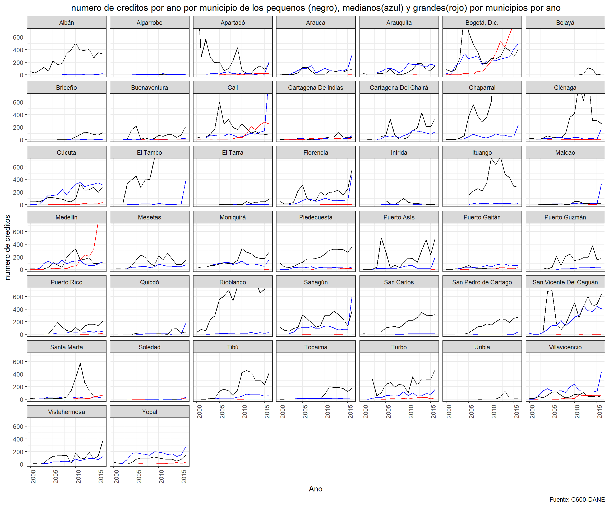
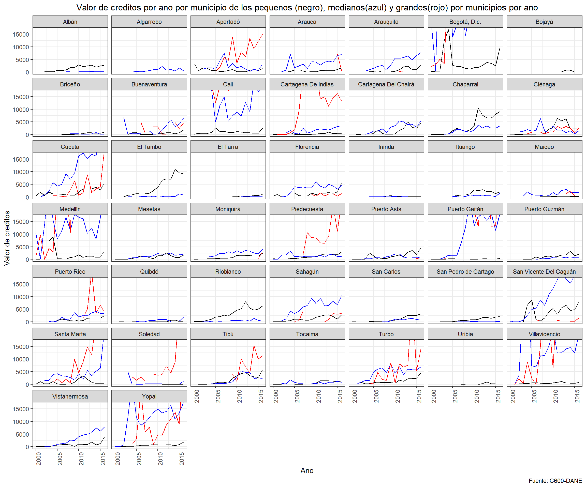
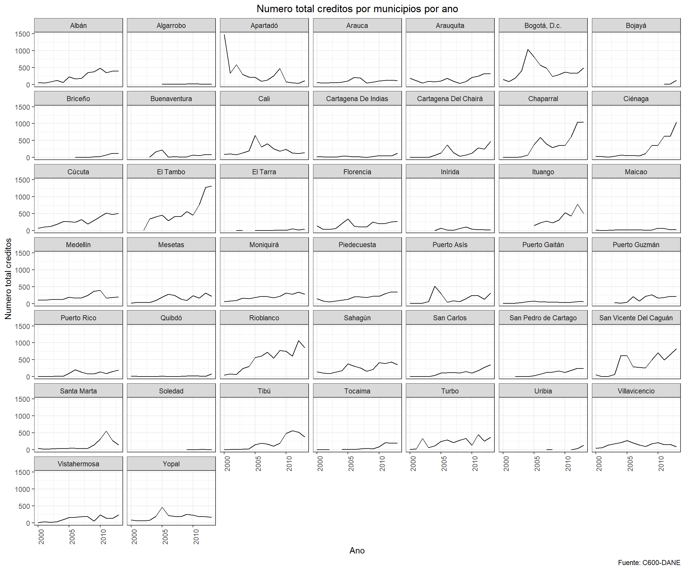
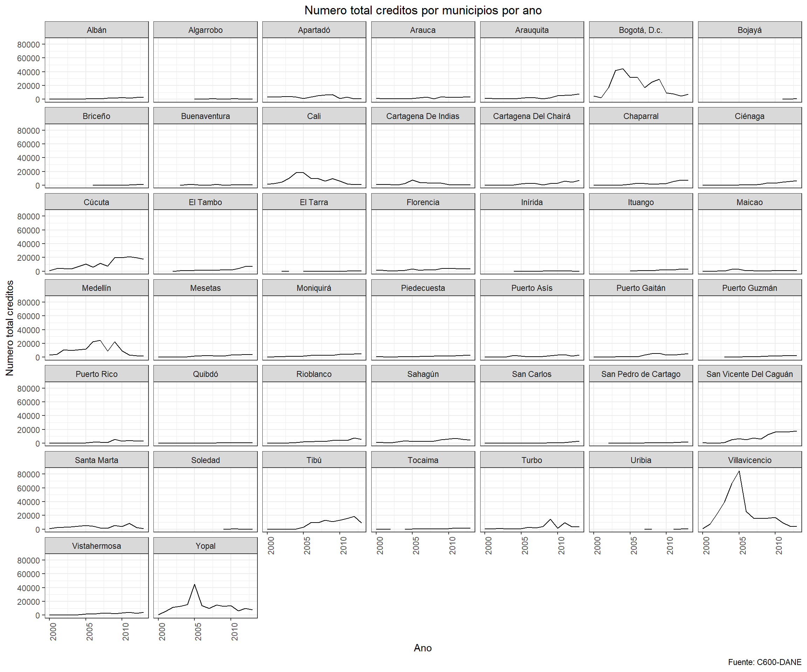

Con este codigo se importan todas las bases de datos y todos los paquetes necesarios.
#ANTES DE CORRER, ¡CORRER LA PESTANA "CODIGO PARA ARRANCAR TODO"!
#Set Working Directory
setwd("C:/Users/felig/Dropbox/Proyecto Juan Camilo")
rm(list=ls())
load("C:/Users/felig/Dropbox/Proyecto Juan Camilo/MergeBases_Environment.RData")
#Cargar paquetes
library(readstata13)
library(tidyr)
library(dplyr)
library(data.table)
library(readxl)
library(doBy)
library(vtable)
library(plyr)
library(gridExtra)
library(grid)
library(purrr)
library(psych)
library(ggplot2)
library(psych)
library(Hmisc)
library(matrixStats)
library(ggpubr)
library(vtable)
library(ggthemes)#Cambiarle los nombres a algunos municipios que no estan codificados igual
cede_tierras_44$municipio[cede_tierras_44$municipio=="Bojaya"] <- "Bojayá"
cede_tierras_44$municipio[cede_tierras_44$municipio=="Bogotá, D.C."] <- "Bogotá, D.c."
cede_tierras_44$municipio[cede_tierras_44$municipio=="Cartagena"] <- "Cartagena De Indias"
cede_tierras_44$municipio[cede_tierras_44$municipio=="Bojaya"] <- "Bojayá"
cede_tierras_44$municipio[cede_tierras_44$municipio=="Cartagena del Chairá"] <- "Cartagena Del Chairá"
cede_tierras_44$municipio[cede_tierras_44$municipio=="San Vicente del Caguán"] <- "San Vicente Del Caguán"Esta seccion esta dividiad por variables. Dentro de cada variable hay dos secciones. En la primer se observa un grafico que muestra las tendencias de la variable para los 44 municipios del ACDI-VOCA. *** La segunda seccion tiene los descriptivos de esas variables. Para mas informacion, acercarse a la descripcion de esa seccion.
Esta variable es la cantidad de creditos que le dan a los pequenos, medianos y grandes productores ***
Vamos a graficar el numero de creditos por ano por municipio de los pequenos, grandes y medianos productores en un mismo grafico. La linea negra son los pequenos La linea azul son los medianos La linea roja son los grandes
En este codigo se crea el grafico que muestra las tendencias en funcion del tiempo para todos los departamentos del cuestionario ACDI-VOCA.
cede_tierras_44 %>%
ggplot(aes(x = ano))+
geom_line(aes(y = nuf_peq)) +
geom_line(aes(y = nuf_medianos), color="blue") +
geom_line(aes(y = nuf_grandes), color="red") +
facet_wrap(~municipio) +
theme_bw()+
labs(y='numero de creditos', title='numero de creditos por ano por municipio de los pequenos (negro), medianos(azul) y grandes(rojo) por municipios por ano', x= 'Ano', caption="Fuente: C600-DANE") +
theme(plot.title = element_text(hjust = 0.5), axis.text.x = element_text(angle=90))+
coord_cartesian(xlim = c(2000:2016),
ylim=c(0:700))
En esta seccion se generan los descriptivos agregados de la variable.
Aqui se genera el collapse por anos para cada municipio. Es decir, aqui se encuentran los descriptivos de la variable para cada municipio, en donde se hizo un collapse por anos.
El nombre de la variable agregada es : descrip_
descrip_nuf_peq <- summaryBy(nuf_peq ~ municipio, cede_tierras_44, FUN=c(sum,mean,sd), na.rm=T ) #Codigo para hacer descriptivos de los homicidios (collapse por anos)
descrip_nuf_peq %<>% arrange(municipio)
print(descrip_nuf_peq)## municipio nuf_peq.sum nuf_peq.mean nuf_peq.sd
## 1 Albán 107425 252.764706 146.252128
## 2 Algarrobo 1525 7.625000 4.780023
## 3 Apartadó 110675 260.411765 330.211849
## 4 Arauca 19450 45.764706 36.752823
## 5 Arauquita 25825 64.562500 57.507729
## 6 Bogotá, D.c. 142125 334.411765 220.947269
## 7 Bojayá 5825 33.285714 43.716413
## 8 Briceño 16450 59.818182 45.910930
## 9 Buenaventura 27000 77.142857 68.017208
## 10 Cali 70925 166.882353 134.342337
## 11 Cartagena De Indias 11200 28.000000 28.789270
## 12 Cartagena Del Chairá 52800 140.800000 133.040443
## 13 Chaparral 232050 546.000000 459.126401
## 14 Ciénaga 113300 266.588235 308.744998
## 15 Cúcuta 60400 142.117647 93.078179
## 16 El Tambo 322175 859.133333 561.889939
## 17 El Tarra 7475 23.000000 25.573665
## 18 Florencia 70875 166.764706 134.267110
## 19 Inírida 8550 28.500000 28.934536
## 20 Ituango 120550 370.923077 220.604690
## 21 Maicao 5825 14.562500 15.039500
## 22 Medellín 47350 118.375000 90.531621
## 23 Mesetas 48800 114.823529 80.594222
## 24 Moniquirá 61200 144.000000 93.471442
## 25 Piedecuesta 82100 193.176471 108.013383
## 26 Puerto Asís 76675 180.411765 172.023562
## 27 Puerto Gaitán 8925 21.000000 14.394214
## 28 Puerto Guzmán 54600 156.000000 94.944562
## 29 Puerto Rico 37025 98.733333 65.699106
## 30 Quibdó 7675 21.928571 28.687788
## 31 Rioblanco 246975 581.117647 321.135199
## 32 Sahagún 87225 205.235294 106.558254
## 33 San Carlos 66175 176.466667 110.825094
## 34 San Pedro de Cartago 52150 139.066667 94.415927
## 35 San Vicente Del Caguán 138675 369.800000 230.169143
## 36 Santa Marta 43125 101.470588 151.273726
## 37 Soledad 450 2.571429 2.327814
## 38 Tibú 80800 202.000000 161.139427
## 39 Tocaima 30875 77.187500 80.203546
## 40 Turbo 94325 235.812500 119.802583
## 41 Uribia 5600 28.000000 39.962294
## 42 Villavicencio 23725 55.823529 32.155715
## 43 Vistahermosa 44575 104.882353 87.895925
## 44 Yopal 29325 69.000000 40.023578A continuacion se generan las variables necesarias para hacer el \(\Delta\). Para obtener el \(\Delta\) se hace la diferencia de la variable entre los primeros 5 anos y los ultimos 5 anos de los datos disponibles. Por ejemplo, si la variable de interes se recolecto entre 1997 y 2016, el \(\Delta\) sera la reste entre el collapase de los anos 1997 a 2001 y el collapse de los anos 2012 a 2016. El nombre de la varible \(\Delta\) es: diff_
descrip_nuf_peq_5antes <- cede_tierras_44 %>%
filter(ano<"2006-04-27") #Codigo para seleccionar solamente las variables que sean menores al ano 2008
descrip_nuf_peq_5antes <- summaryBy(nuf_peq ~ municipio, descrip_nuf_peq_5antes, FUN=c(sum,mean,sd), na.rm=T ) #Descriptivos de esos anos.
descrip_nuf_peq_5despues <- cede_tierras_44 %>%
filter(ano>"2010-04-27") #Codigo para seleccionar solamente las variables que sean mayores al ano 2008.
descrip_nuf_peq_5despues <- summaryBy(nuf_peq ~ municipio, descrip_nuf_peq_5despues, FUN=c(sum,mean,sd), na.rm=T ) #Descriptivos de esos anos. Codigo para calcular el \(\Delta\)
diff_nuf_peq_mean <- descrip_nuf_peq_5antes$nuf_peq.mean -descrip_nuf_peq_5despues$nuf_peq.mean
diff_nuf_peq_sd <- descrip_nuf_peq_5antes$nuf_peq.sd -descrip_nuf_peq_5despues$nuf_peq.sd #Sacar diferencias entre esos estadisticos. Un valor negativo es que hay mas ataques en los ultimos 5 anos.
print(diff_nuf_peq_mean)## [1] -251.5238095 NaN 344.2619048 -20.3571429 -90.6666667
## [6] 28.5238095 -37.6666667 -95.5000000 7.5833333 62.4047619
## [11] -43.8333333 -164.2666667 -951.9523810 -538.8095238 -178.9761905
## [16] -1183.0333333 -43.8333333 -160.4761905 27.6666667 -360.3333333
## [21] -20.8333333 -92.0000000 -77.2380952 -166.3095238 -233.6428571
## [26] -176.3095238 -0.2619048 -137.5000000 -82.7333333 -34.8333333
## [31] -580.2380952 -150.4047619 -236.9000000 -212.3666667 -161.5333333
## [36] -179.3333333 -1.8333333 -301.8333333 -170.0000000 -171.8333333
## [41] NaN -4.7380952 -106.2142857 -49.5238095En esta seccion se generan los descriptivos agregados de la variable.
Aqui se genera el collapse por anos para cada municipio. Es decir, aqui se encuentran los descriptivos de la variable para cada municipio, en donde se hizo un collapse por anos.
El nombre de la variable agregada es : descrip_
descrip_nuf_medianos <- summaryBy(nuf_medianos ~ municipio, cede_tierras_44, FUN=c(sum,mean,sd), na.rm=T ) #Codigo para hacer descriptivos de los homicidios (collapse por anos)
descrip_nuf_medianos %<>% arrange(municipio)
print(descrip_nuf_medianos)## municipio nuf_medianos.sum nuf_medianos.mean
## 1 Albán 2125 7.727273
## 2 Algarrobo 2375 7.307692
## 3 Apartadó 12850 34.266667
## 4 Arauca 35050 93.466667
## 5 Arauquita 40100 114.571429
## 6 Bogotá, D.c. 102475 241.117647
## 7 Bojayá 25 1.000000
## 8 Briceño 1725 6.900000
## 9 Buenaventura 3050 8.714286
## 10 Cali 52025 130.062500
## 11 Cartagena De Indias 6950 18.533333
## 12 Cartagena Del Chairá 27725 79.214286
## 13 Chaparral 23925 68.357143
## 14 Ciénaga 12275 32.733333
## 15 Cúcuta 86600 203.764706
## 16 El Tambo 12100 34.571429
## 17 El Tarra 575 2.555556
## 18 Florencia 33575 83.937500
## 19 Inírida 2325 8.454545
## 20 Ituango 5375 16.538462
## 21 Maicao 12950 37.000000
## 22 Medellín 37925 89.235294
## 23 Mesetas 17525 50.071429
## 24 Moniquirá 32975 87.933333
## 25 Piedecuesta 11250 26.470588
## 26 Puerto Asís 14275 38.066667
## 27 Puerto Gaitán 18300 48.800000
## 28 Puerto Guzmán 5750 20.909091
## 29 Puerto Rico 10750 30.714286
## 30 Quibdó 5950 19.833333
## 31 Rioblanco 6550 17.466667
## 32 Sahagún 47650 127.066667
## 33 San Carlos 1975 7.181818
## 34 San Pedro de Cartago 2175 7.909091
## 35 San Vicente Del Caguán 89875 211.470588
## 36 Santa Marta 9550 23.875000
## 37 Soledad 1375 3.666667
## 38 Tibú 14100 40.285714
## 39 Tocaima 4700 12.533333
## 40 Turbo 25125 62.812500
## 41 Uribia 2550 51.000000
## 42 Villavicencio 60175 141.588235
## 43 Vistahermosa 20325 50.812500
## 44 Yopal 58400 137.411765
## nuf_medianos.sd
## 1 6.549794
## 2 4.817417
## 3 47.749439
## 4 72.708180
## 5 49.533229
## 6 118.049139
## 7 0.000000
## 8 2.591692
## 9 7.004180
## 10 223.778071
## 11 14.838104
## 12 44.380774
## 13 52.811509
## 14 40.994435
## 15 121.523121
## 16 93.852376
## 17 1.836577
## 18 110.872858
## 19 14.657673
## 20 8.245981
## 21 79.951633
## 22 44.352694
## 23 17.771489
## 24 33.898769
## 25 12.771198
## 26 46.409112
## 27 24.132544
## 28 10.432740
## 29 15.316286
## 30 45.889269
## 31 9.014743
## 32 136.312429
## 33 4.394302
## 34 11.297685
## 35 154.879030
## 36 10.362327
## 37 7.873215
## 38 27.319159
## 39 4.944433
## 40 38.831973
## 41 50.507627
## 42 93.231465
## 43 34.160572
## 44 72.303784A continuacion se generan las variables necesarias para hacer el \(\Delta\). Para obtener el \(\Delta\) se hace la diferencia de la variable entre los primeros 5 anos y los ultimos 5 anos de los datos disponibles. Por ejemplo, si la variable de interes se recolecto entre 1997 y 2016, el \(\Delta\) sera la reste entre el collapase de los anos 1997 a 2001 y el collapse de los anos 2012 a 2016. El nombre de la varible \(\Delta\) es: diff_
descrip_nuf_medianos_5antes <- cede_tierras_44 %>%
filter(ano<"2006-04-27") #Codigo para seleccionar solamente las variables que sean menores al ano 2008
descrip_nuf_medianos_5antes <- summaryBy(nuf_medianos ~ municipio, descrip_nuf_medianos_5antes, FUN=c(sum,mean,sd), na.rm=T ) #Descriptivos de esos anos.
descrip_nuf_medianos_5despues <- cede_tierras_44 %>%
filter(ano>"2010-04-27") #Codigo para seleccionar solamente las variables que sean mayores al ano 2008.
descrip_nuf_medianos_5despues <- summaryBy(nuf_medianos ~ municipio, descrip_nuf_medianos_5despues, FUN=c(sum,mean,sd), na.rm=T ) #Descriptivos de esos anos. Codigo para calcular el \(\Delta\)
diff_nuf_medianos_mean <- descrip_nuf_medianos_5antes$nuf_medianos.mean -descrip_nuf_medianos_5despues$nuf_medianos.mean
diff_nuf_medianos_sd <- descrip_nuf_medianos_5antes$nuf_medianos.sd -descrip_nuf_medianos_5despues$nuf_medianos.sd #Sacar diferencias entre esos estadisticos. Un valor negativo es que hay mas ataques en los ultimos 5 anos.
print(diff_nuf_medianos_mean)## [1] -10.500000 -6.166667 -25.633333 -56.600000 -81.916667
## [6] -147.309524 NaN -1.000000 -10.000000 -203.333333
## [11] -13.800000 -91.000000 -60.083333 -25.733333 -242.333333
## [16] -62.583333 -2.000000 -103.833333 -13.833333 -9.333333
## [21] -60.750000 -32.857143 -23.750000 -14.333333 -10.785714
## [26] -40.366667 -50.200000 -27.333333 -32.083333 -37.666667
## [31] -15.433333 -108.200000 -7.500000 -8.833333 -333.309524
## [36] -4.000000 -5.433333 -58.000000 -5.666667 -59.333333
## [41] NaN -88.904762 -68.500000 -86.047619En esta seccion se generan los descriptivos agregados de la variable.
Aqui se genera el collapse por anos para cada municipio. Es decir, aqui se encuentran los descriptivos de la variable para cada municipio, en donde se hizo un collapse por anos.
El nombre de la variable agregada es : descrip_
descrip_nuf_grandes <- summaryBy(nuf_grandes ~ municipio, cede_tierras_44, FUN=c(sum,mean,sd), na.rm=T ) #Codigo para hacer descriptivos de los homicidios (collapse por anos)
descrip_nuf_grandes %<>% arrange(municipio)
print(descrip_nuf_grandes)## municipio nuf_grandes.sum nuf_grandes.mean nuf_grandes.sd
## 1 Albán 0 NaN NA
## 2 Algarrobo 100 2.000000 1.0101525
## 3 Apartadó 4300 13.230769 8.2041265
## 4 Arauca 175 2.333333 0.4745790
## 5 Arauquita 75 1.000000 0.0000000
## 6 Bogotá, D.c. 103250 242.941176 291.4382582
## 7 Bojayá 0 NaN NA
## 8 Briceño 0 NaN NA
## 9 Buenaventura 925 3.700000 3.4434619
## 10 Cali 35175 87.937500 100.2156001
## 11 Cartagena De Indias 5275 13.187500 8.8372840
## 12 Cartagena Del Chairá 25 1.000000 0.0000000
## 13 Chaparral 25 1.000000 0.0000000
## 14 Ciénaga 900 3.000000 1.7824863
## 15 Cúcuta 2775 8.538462 10.6256110
## 16 El Tambo 0 NaN NA
## 17 El Tarra 0 NaN NA
## 18 Florencia 850 3.400000 2.8762984
## 19 Inírida 0 NaN NA
## 20 Ituango 0 NaN NA
## 21 Maicao 325 4.333333 2.6423440
## 22 Medellín 70725 166.411765 274.2356571
## 23 Mesetas 0 NaN NA
## 24 Moniquirá 100 1.333333 0.4745790
## 25 Piedecuesta 2875 9.583333 6.9813216
## 26 Puerto Asís 75 1.500000 0.5050763
## 27 Puerto Gaitán 3900 14.181818 11.1951679
## 28 Puerto Guzmán 0 NaN NA
## 29 Puerto Rico 850 4.857143 4.9546382
## 30 Quibdó 0 NaN NA
## 31 Rioblanco 0 NaN NA
## 32 Sahagún 575 2.875000 1.6194096
## 33 San Carlos 75 1.500000 0.5050763
## 34 San Pedro de Cartago 0 NaN NA
## 35 San Vicente Del Caguán 275 1.375000 0.6977170
## 36 Santa Marta 6000 17.142857 19.5722786
## 37 Soledad 1175 3.615385 2.7926950
## 38 Tibú 825 4.125000 2.4779175
## 39 Tocaima 50 1.000000 0.0000000
## 40 Turbo 4375 13.461538 10.7051922
## 41 Uribia 75 1.500000 0.5050763
## 42 Villavicencio 11300 28.250000 27.2450589
## 43 Vistahermosa 0 NaN NA
## 44 Yopal 3650 10.428571 8.0534949A continuacion se generan las variables necesarias para hacer el \(\Delta\). Para obtener el \(\Delta\) se hace la diferencia de la variable entre los primeros 5 anos y los ultimos 5 anos de los datos disponibles. Por ejemplo, si la variable de interes se recolecto entre 1997 y 2016, el \(\Delta\) sera la reste entre el collapase de los anos 1997 a 2001 y el collapse de los anos 2012 a 2016. El nombre de la varible \(\Delta\) es: diff_
descrip_nuf_grandes_5antes <- cede_tierras_44 %>%
filter(ano<"2006-04-27") #Codigo para seleccionar solamente las variables que sean menores al ano 2008
descrip_nuf_grandes_5antes <- summaryBy(nuf_grandes ~ municipio, descrip_nuf_grandes_5antes, FUN=c(sum,mean,sd), na.rm=T ) #Descriptivos de esos anos.
descrip_nuf_grandes_5despues <- cede_tierras_44 %>%
filter(ano>"2010-04-27") #Codigo para seleccionar solamente las variables que sean mayores al ano 2008.
descrip_nuf_grandes_5despues <- summaryBy(nuf_grandes ~ municipio, descrip_nuf_grandes_5despues, FUN=c(sum,mean,sd), na.rm=T ) #Descriptivos de esos anos. Codigo para calcular el \(\Delta\)
diff_nuf_grandes_mean <- descrip_nuf_grandes_5antes$nuf_grandes.mean -descrip_nuf_grandes_5despues$nuf_grandes.mean
diff_nuf_grandes_sd <- descrip_nuf_grandes_5antes$nuf_grandes.sd -descrip_nuf_grandes_5despues$nuf_grandes.sd #Sacar diferencias entre esos estadisticos. Un valor negativo es que hay mas ataques en los ultimos 5 anos.
print(diff_nuf_grandes_mean)## [1] NaN NaN -16.500000 NaN NaN
## [6] -591.857143 NaN NaN -3.600000 -197.000000
## [11] -16.166667 NaN NaN -2.500000 -15.333333
## [16] NaN NaN 7.666667 NaN NaN
## [21] NaN -433.619048 NaN NaN -14.166667
## [26] NaN -21.000000 NaN -4.500000 NaN
## [31] NaN -0.800000 NaN NaN -0.200000
## [36] -31.833333 -4.750000 NaN NaN -19.833333
## [41] NaN -59.333333 NaN -12.500000Esta variable es la cantidad de creditos que le dan a los pequenos, medianos y grandes productores ***
Vamos a graficar el valor del credito por ano por municipio de los pequenos, grandes y medianos productores en un mismo grafico. La linea negra son los pequenos La linea azul son los medianos La linea roja son los grandes
En este codigo se crea el grafico que muestra las tendencias en funcion del tiempo para todos los departamentos del cuestionario ACDI-VOCA.
cede_tierras_44 %>%
ggplot(aes(x = ano))+
geom_line(aes(y = vrf_peq)) +
geom_line(aes(y = vrf_medianos), color="blue") +
geom_line(aes(y = vrf_grandes), color="red") +
facet_wrap(~municipio) +
theme_bw()+
labs(y='Valor de creditos', title='Valor de creditos por ano por municipio de los pequenos (negro), medianos(azul) y grandes(rojo) por municipios por ano', x= 'Ano', caption="Fuente: C600-DANE") +
theme(plot.title = element_text(hjust = 0.5), axis.text.x = element_text(angle=90))+
coord_cartesian(xlim = c(2000:2016),
ylim=c(cede_tierras_44$vrf_peq[which.min(cede_tierras_44$vrf_peq)],
cede_tierras_44$vrf_peq[which.max(cede_tierras_44$vrf_peq)]))
En esta seccion se generan los descriptivos agregados de la variable.
Aqui se genera el collapse por anos para cada municipio. Es decir, aqui se encuentran los descriptivos de la variable para cada municipio, en donde se hizo un collapse por anos.
El nombre de la variable agregada es : descrip_
descrip_vrf_peq <- summaryBy(vrf_peq ~ municipio, cede_tierras_44, FUN=c(sum,mean,sd), na.rm=T ) #Codigo para hacer descriptivos de los homicidios (collapse por anos)
descrip_vrf_peq %<>% arrange(municipio)
print(descrip_vrf_peq)## municipio vrf_peq.sum vrf_peq.mean vrf_peq.sd
## 1 Albán 595690.455 1401.62460 1032.58973
## 2 Algarrobo 14066.300 70.33150 44.47825
## 3 Apartadó 379330.188 892.54162 766.34063
## 4 Arauca 202577.605 476.65319 442.03192
## 5 Arauquita 295260.839 738.15210 847.71717
## 6 Bogotá, D.c. 1640809.126 3860.72736 4480.21085
## 7 Bojayá 47002.913 268.58807 346.25833
## 8 Briceño 101921.801 370.62473 313.69677
## 9 Buenaventura 174508.452 498.59558 456.98332
## 10 Cali 405660.408 954.49508 685.57178
## 11 Cartagena De Indias 107108.223 267.77056 281.77619
## 12 Cartagena Del Chairá 565755.639 1508.68170 1612.77077
## 13 Chaparral 1533069.652 3607.22271 3516.15188
## 14 Ciénaga 780514.615 1836.50498 2181.46985
## 15 Cúcuta 868434.811 2043.37603 1403.57961
## 16 El Tambo 1597502.043 4260.00545 3635.18458
## 17 El Tarra 85254.435 262.32134 323.73370
## 18 Florencia 563376.709 1325.59226 1239.00312
## 19 Inírida 44317.220 147.72407 146.58920
## 20 Ituango 492755.430 1516.17055 936.14974
## 21 Maicao 35157.053 87.89263 81.65391
## 22 Medellín 733049.743 1832.62436 2540.40481
## 23 Mesetas 397108.124 934.37206 714.77113
## 24 Moniquirá 363136.355 854.43848 695.10600
## 25 Piedecuesta 467163.926 1099.20924 863.72814
## 26 Puerto Asís 585222.797 1376.99482 1331.45361
## 27 Puerto Gaitán 65580.889 154.30797 105.69207
## 28 Puerto Guzmán 417767.746 1193.62213 857.47240
## 29 Puerto Rico 332066.016 885.50938 692.34353
## 30 Quibdó 49951.388 142.71825 226.59394
## 31 Rioblanco 1345804.092 3166.59786 2339.31175
## 32 Sahagún 539934.882 1270.43502 928.23447
## 33 San Carlos 402906.560 1074.41749 1095.51311
## 34 San Pedro de Cartago 332606.625 886.95100 738.31328
## 35 San Vicente Del Caguán 1506272.925 4016.72780 2740.79841
## 36 Santa Marta 340024.041 800.05657 910.20792
## 37 Soledad 2984.628 17.05501 18.63183
## 38 Tibú 813514.664 2033.78666 1850.51458
## 39 Tocaima 216923.998 542.30999 592.22064
## 40 Turbo 488650.077 1221.62519 1108.95717
## 41 Uribia 41440.596 207.20298 293.67061
## 42 Villavicencio 192989.993 454.09410 289.07027
## 43 Vistahermosa 360071.519 847.22710 876.82015
## 44 Yopal 243588.583 573.14961 432.49971A continuacion se generan las variables necesarias para hacer el \(\Delta\). Para obtener el \(\Delta\) se hace la diferencia de la variable entre los primeros 5 anos y los ultimos 5 anos de los datos disponibles. Por ejemplo, si la variable de interes se recolecto entre 1997 y 2016, el \(\Delta\) sera la reste entre el collapase de los anos 1997 a 2001 y el collapse de los anos 2012 a 2016. El nombre de la varible \(\Delta\) es: diff_
descrip_vrf_peq_5antes <- cede_tierras_44 %>%
filter(ano<"2006-04-27") #Codigo para seleccionar solamente las variables que sean menores al ano 2008
descrip_vrf_peq_5antes <- summaryBy(vrf_peq ~ municipio, descrip_vrf_peq_5antes, FUN=c(sum,mean,sd), na.rm=T ) #Descriptivos de esos anos.
descrip_vrf_peq_5despues <- cede_tierras_44 %>%
filter(ano>"2010-04-27") #Codigo para seleccionar solamente las variables que sean mayores al ano 2008.
descrip_vrf_peq_5despues <- summaryBy(vrf_peq ~ municipio, descrip_vrf_peq_5despues, FUN=c(sum,mean,sd), na.rm=T ) #Descriptivos de esos anos. Codigo para calcular el \(\Delta\)
diff_vrf_peq_mean <- descrip_vrf_peq_5antes$vrf_peq.mean -descrip_vrf_peq_5despues$vrf_peq.mean
diff_vrf_peq_sd <- descrip_vrf_peq_5antes$vrf_peq.sd -descrip_vrf_peq_5despues$vrf_peq.sd #Sacar diferencias entre esos estadisticos. Un valor negativo es que hay mas ataques en los ultimos 5 anos.
print(diff_vrf_peq_mean)## [1] -2088.75194 NaN 577.13047 -526.77003 -1454.41588
## [6] 1051.52746 -306.70275 -617.78367 -376.60224 -158.70204
## [11] -346.12359 -2633.95578 -7422.54711 -3987.81849 -2464.88419
## [16] -7566.55730 -526.10890 -1542.50993 56.62170 -1884.63235
## [21] -140.27292 1384.59741 -1110.91965 -1388.80301 -1864.70808
## [26] -2008.89146 -116.90538 -1564.84479 -1162.57322 -278.33002
## [31] -4896.71089 -1788.57076 -2155.97574 -1607.50462 -2050.85599
## [36] -838.10826 -18.73085 -3706.76532 -1249.70249 -1887.42377
## [41] NaN -374.27519 -1263.32486 -687.42357En esta seccion se generan los descriptivos agregados de la variable.
Aqui se genera el collapse por anos para cada municipio. Es decir, aqui se encuentran los descriptivos de la variable para cada municipio, en donde se hizo un collapse por anos.
El nombre de la variable agregada es : descrip_
descrip_vrf_medianos <- summaryBy(vrf_medianos ~ municipio, cede_tierras_44, FUN=c(sum,mean,sd), na.rm=T ) #Codigo para hacer descriptivos de los homicidios (collapse por anos)
descrip_vrf_medianos %<>% arrange(municipio)
print(descrip_vrf_medianos)## municipio vrf_medianos.sum vrf_medianos.mean
## 1 Albán 37029.541 134.65287
## 2 Algarrobo 256115.208 788.04680
## 3 Apartadó 843199.170 2248.53112
## 4 Arauca 1333818.375 3556.84900
## 5 Arauquita 1345032.518 3842.95005
## 6 Bogotá, D.c. 14846324.863 34932.52909
## 7 Bojayá 3600.000 144.00000
## 8 Briceño 66545.490 266.18196
## 9 Buenaventura 869646.350 2484.70386
## 10 Cali 5423348.511 13558.37128
## 11 Cartagena De Indias 607810.390 1620.82771
## 12 Cartagena Del Chairá 994533.914 2841.52547
## 13 Chaparral 695380.111 1986.80032
## 14 Ciénaga 672609.675 1793.62580
## 15 Cúcuta 4358851.857 10256.12202
## 16 El Tambo 102518.506 292.91002
## 17 El Tarra 15154.400 67.35289
## 18 Florencia 1303877.212 3259.69303
## 19 Inírida 45683.860 166.12313
## 20 Ituango 166080.542 511.01705
## 21 Maicao 483554.839 1381.58526
## 22 Medellín 6199630.301 14587.36541
## 23 Mesetas 536334.055 1532.38301
## 24 Moniquirá 892927.901 2381.14107
## 25 Piedecuesta 568536.995 1337.73411
## 26 Puerto Asís 332072.779 885.52741
## 27 Puerto Gaitán 3996375.923 10657.00246
## 28 Puerto Guzmán 169441.265 616.15005
## 29 Puerto Rico 740813.870 2116.61106
## 30 Quibdó 158736.440 529.12147
## 31 Rioblanco 172216.871 459.24499
## 32 Sahagún 2252072.717 6005.52725
## 33 San Carlos 196488.692 714.50433
## 34 San Pedro de Cartago 19273.114 70.08405
## 35 San Vicente Del Caguán 4088977.703 9621.12401
## 36 Santa Marta 1753415.893 4383.53973
## 37 Soledad 217286.556 579.43082
## 38 Tibú 676104.699 1931.72771
## 39 Tocaima 246215.422 656.57446
## 40 Turbo 1847553.455 4618.88364
## 41 Uribia 3084.368 61.68737
## 42 Villavicencio 6090738.022 14331.14829
## 43 Vistahermosa 1254000.990 3135.00247
## 44 Yopal 4823853.865 11350.24439
## vrf_medianos.sd
## 1 87.26209
## 2 603.80123
## 3 1785.23189
## 4 2068.82828
## 5 2360.57744
## 6 25168.58699
## 7 0.00000
## 8 196.88948
## 9 2415.20951
## 10 8876.83457
## 11 940.19594
## 12 1755.05710
## 13 1110.83214
## 14 1405.28693
## 15 7831.03183
## 16 335.69939
## 17 56.34146
## 18 1760.28002
## 19 113.84618
## 20 387.89371
## 21 810.01653
## 22 7353.72150
## 23 671.13021
## 24 1053.51292
## 25 724.49851
## 26 593.23903
## 27 7672.92433
## 28 323.93102
## 29 1364.91829
## 30 518.50066
## 31 331.65778
## 32 2805.80136
## 33 459.89345
## 34 43.57782
## 35 7506.48674
## 36 4700.44254
## 37 1231.04684
## 38 1805.04363
## 39 404.19097
## 40 2368.70025
## 41 46.55527
## 42 11278.66140
## 43 2625.23745
## 44 6306.52942A continuacion se generan las variables necesarias para hacer el \(\Delta\). Para obtener el \(\Delta\) se hace la diferencia de la variable entre los primeros 5 anos y los ultimos 5 anos de los datos disponibles. Por ejemplo, si la variable de interes se recolecto entre 1997 y 2016, el \(\Delta\) sera la reste entre el collapase de los anos 1997 a 2001 y el collapse de los anos 2012 a 2016. El nombre de la varible \(\Delta\) es: diff_
descrip_vrf_medianos_5antes <- cede_tierras_44 %>%
filter(ano<"2006-04-27") #Codigo para seleccionar solamente las variables que sean menores al ano 2008
descrip_vrf_medianos_5antes <- summaryBy(vrf_medianos ~ municipio, descrip_vrf_medianos_5antes, FUN=c(sum,mean,sd), na.rm=T ) #Descriptivos de esos anos.
descrip_vrf_medianos_5despues <- cede_tierras_44 %>%
filter(ano>"2010-04-27") #Codigo para seleccionar solamente las variables que sean mayores al ano 2008.
descrip_vrf_medianos_5despues <- summaryBy(vrf_medianos ~ municipio, descrip_vrf_medianos_5despues, FUN=c(sum,mean,sd), na.rm=T ) #Descriptivos de esos anos. Codigo para calcular el \(\Delta\)
diff_vrf_medianos_mean <- descrip_vrf_medianos_5antes$vrf_medianos.mean -descrip_vrf_medianos_5despues$vrf_medianos.mean
diff_vrf_medianos_sd <- descrip_vrf_medianos_5antes$vrf_medianos.sd -descrip_vrf_medianos_5despues$vrf_medianos.sd #Sacar diferencias entre esos estadisticos. Un valor negativo es que hay mas ataques en los ultimos 5 anos.
print(diff_vrf_medianos_mean)## [1] -186.95360 -947.33586 558.45762 -2373.00046 -4819.87372
## [6] -11659.92772 NaN -99.57876 -2552.63344 1182.43896
## [11] -1735.10630 -3616.92844 -2189.78832 175.97468 -16444.23479
## [16] -379.74499 -77.52933 -2538.14700 -105.47093 -498.98924
## [21] -950.27993 -2815.04484 -1390.42812 -1844.89427 -150.68118
## [26] -595.33368 -15239.89447 -795.76929 -2618.73157 -701.88071
## [31] -506.67097 -5280.54995 -921.80794 -73.12568 -16351.67003
## [36] -4875.70665 932.22568 -3375.73294 -43.54486 -3408.62476
## [41] NaN -211.43822 -5645.59159 -6028.86333En esta seccion se generan los descriptivos agregados de la variable.
Aqui se genera el collapse por anos para cada municipio. Es decir, aqui se encuentran los descriptivos de la variable para cada municipio, en donde se hizo un collapse por anos.
El nombre de la variable agregada es : descrip_
descrip_vrf_grandes <- summaryBy(vrf_grandes ~ municipio, cede_tierras_44, FUN=c(sum,mean,sd), na.rm=T ) #Codigo para hacer descriptivos de los homicidios (collapse por anos)
descrip_vrf_grandes %<>% arrange(municipio)
print(descrip_vrf_grandes)## municipio vrf_grandes.sum vrf_grandes.mean vrf_grandes.sd
## 1 Albán 0.00 NaN NA
## 2 Algarrobo 14834.00 296.6800 8.768117e+00
## 3 Apartadó 2359615.97 7260.3568 4.966623e+03
## 4 Arauca 205020.31 2733.6042 3.187398e+03
## 5 Arauquita 25000.00 333.3333 9.491580e+01
## 6 Bogotá, D.c. 131177627.85 308653.2420 4.134384e+05
## 7 Bojayá 0.00 NaN NA
## 8 Briceño 0.00 NaN NA
## 9 Buenaventura 924497.73 3697.9909 3.647665e+03
## 10 Cali 28825190.38 72062.9760 6.265327e+04
## 11 Cartagena De Indias 5073717.49 12684.2937 9.929928e+03
## 12 Cartagena Del Chairá 2500.00 100.0000 0.000000e+00
## 13 Chaparral 25000.00 1000.0000 0.000000e+00
## 14 Ciénaga 472136.69 1573.7890 1.043167e+03
## 15 Cúcuta 1241467.73 3819.9007 4.948276e+03
## 16 El Tambo 0.00 NaN NA
## 17 El Tarra 0.00 NaN NA
## 18 Florencia 206867.15 827.4686 4.739340e+02
## 19 Inírida 0.00 NaN NA
## 20 Ituango 0.00 NaN NA
## 21 Maicao 103037.50 1373.8333 8.215814e+02
## 22 Medellín 66707934.20 156959.8452 2.483242e+05
## 23 Mesetas 0.00 NaN NA
## 24 Moniquirá 89285.94 1190.4792 1.339626e+03
## 25 Piedecuesta 2704033.42 9013.4447 7.012261e+03
## 26 Puerto Asís 23000.00 460.0000 1.616244e+02
## 27 Puerto Gaitán 4214404.63 15325.1077 1.405756e+04
## 28 Puerto Guzmán 0.00 NaN NA
## 29 Puerto Rico 1005450.76 5745.4329 6.089376e+03
## 30 Quibdó 0.00 NaN NA
## 31 Rioblanco 0.00 NaN NA
## 32 Sahagún 393934.28 1969.6714 1.561777e+03
## 33 San Carlos 26250.00 525.0000 2.777919e+02
## 34 San Pedro de Cartago 0.00 NaN NA
## 35 San Vicente Del Caguán 118775.00 593.8750 4.098353e+02
## 36 Santa Marta 5129582.51 14655.9500 2.086498e+04
## 37 Soledad 3093021.46 9516.9891 1.222224e+04
## 38 Tibú 1573257.11 7866.2856 4.331104e+03
## 39 Tocaima 28590.00 571.8000 5.270976e+02
## 40 Turbo 2346020.35 7218.5241 8.757074e+03
## 41 Uribia 32500.00 650.0000 3.535534e+02
## 42 Villavicencio 7551338.49 18878.3462 1.533196e+04
## 43 Vistahermosa 0.00 NaN NA
## 44 Yopal 3175735.84 9073.5310 8.973409e+03A continuacion se generan las variables necesarias para hacer el \(\Delta\). Para obtener el \(\Delta\) se hace la diferencia de la variable entre los primeros 5 anos y los ultimos 5 anos de los datos disponibles. Por ejemplo, si la variable de interes se recolecto entre 1997 y 2016, el \(\Delta\) sera la reste entre el collapase de los anos 1997 a 2001 y el collapse de los anos 2012 a 2016. El nombre de la varible \(\Delta\) es: diff_
descrip_vrf_grandes_5antes <- cede_tierras_44 %>%
filter(ano<"2006-04-27") #Codigo para seleccionar solamente las variables que sean menores al ano 2008
descrip_vrf_grandes_5antes <- summaryBy(vrf_grandes ~ municipio, descrip_vrf_grandes_5antes, FUN=c(sum,mean,sd), na.rm=T ) #Descriptivos de esos anos.
descrip_vrf_grandes_5despues <- cede_tierras_44 %>%
filter(ano>"2010-04-27") #Codigo para seleccionar solamente las variables que sean mayores al ano 2008.
descrip_vrf_grandes_5despues <- summaryBy(vrf_grandes ~ municipio, descrip_vrf_grandes_5despues, FUN=c(sum,mean,sd), na.rm=T ) #Descriptivos de esos anos. Codigo para calcular el \(\Delta\)
diff_vrf_grandes_mean <- descrip_vrf_grandes_5antes$vrf_grandes.mean -descrip_vrf_grandes_5despues$vrf_grandes.mean
diff_vrf_grandes_sd <- descrip_vrf_grandes_5antes$vrf_grandes.sd -descrip_vrf_grandes_5despues$vrf_grandes.sd #Sacar diferencias entre esos estadisticos. Un valor negativo es que hay mas ataques en los ultimos 5 anos.
print(diff_vrf_grandes_mean)## [1] NaN NaN -9858.031 NaN NaN
## [6] -759682.732 NaN NaN 6732.285 -120947.217
## [11] -12057.503 NaN NaN -1777.175 -5905.828
## [16] NaN NaN -836.706 NaN NaN
## [21] NaN -402040.646 NaN NaN -12915.460
## [26] NaN -24342.629 NaN -6563.005 NaN
## [31] NaN -1748.500 NaN NaN -370.000
## [36] -29702.915 -12285.568 NaN NaN -10843.662
## [41] NaN -31307.417 NaN -6920.591En este codigo se crea el grafico que muestra las tendencias en funcion del tiempo para todos los departamentos del cuestionario ACDI-VOCA.
cede_tierras_44 %>%
ggplot(aes(x = ano, y = ba_tot_nu)) +
geom_line() +
facet_wrap(~municipio) +
theme_bw()+
labs(y='Numero total creditos', title='Numero total creditos por municipios por ano', x= 'Ano', caption="Fuente: C600-DANE") +
theme(plot.title = element_text(hjust = 0.5), axis.text.x = element_text(angle=90))+
coord_cartesian(xlim = c(2000:2013),
ylim=c(cede_tierras_44$ba_tot_nu[which.min(cede_tierras_44$ba_tot_nu)],cede_tierras_44$ba_tot_nu[which.max(cede_tierras_44$ba_tot_nu)]))
En esta seccion se generan los descriptivos agregados de la variable.
Aqui se genera el collapse por anos para cada municipio. Es decir, aqui se encuentran los descriptivos de la variable para cada municipio, en donde se hizo un collapse por anos.
El nombre de la variable agregada es : descrip_
descrip_ba_tot_nu <- summaryBy(ba_tot_nu ~ municipio, cede_tierras_44, FUN=c(sum,mean,sd), na.rm=T ) #Codigo para hacer descriptivos de los homicidios (collapse por anos)
descrip_ba_tot_nu %<>% arrange(municipio)
print(descrip_ba_tot_nu)## municipio ba_tot_nu.sum ba_tot_nu.mean ba_tot_nu.sd
## 1 Albán 81700 233.428571 147.618009
## 2 Algarrobo 1925 8.555556 5.959520
## 3 Apartadó 107900 308.285714 358.269365
## 4 Arauca 32750 93.571429 51.117476
## 5 Arauquita 51625 147.500000 90.591616
## 6 Bogotá, D.c. 143550 410.142857 249.065548
## 7 Bojayá 3325 33.250000 48.888530
## 8 Briceño 9050 45.250000 48.354195
## 9 Buenaventura 19100 69.454545 65.708330
## 10 Cali 76350 218.142857 149.065310
## 11 Cartagena De Indias 12175 34.785714 28.375750
## 12 Cartagena Del Chairá 49050 140.142857 144.460193
## 13 Chaparral 129825 370.928571 342.422364
## 14 Ciénaga 87525 250.071429 307.046767
## 15 Cúcuta 99250 283.571429 142.079679
## 16 El Tambo 167150 557.166667 370.628327
## 17 El Tarra 3375 12.272727 16.556092
## 18 Florencia 58875 168.214286 92.402802
## 19 Inírida 9100 36.400000 31.387589
## 20 Ituango 85750 381.111111 187.332332
## 21 Maicao 8350 23.857143 18.056966
## 22 Medellín 65775 187.928571 86.992461
## 23 Mesetas 51900 148.285714 95.510563
## 24 Moniquirá 68250 195.000000 83.483437
## 25 Piedecuesta 64450 184.142857 91.625606
## 26 Puerto Asís 53775 153.642857 144.494776
## 27 Puerto Gaitán 13850 39.571429 20.354010
## 28 Puerto Guzmán 40025 145.545455 86.668219
## 29 Puerto Rico 30600 87.428571 68.918907
## 30 Quibdó 5575 15.928571 20.123061
## 31 Rioblanco 180725 516.357143 309.313781
## 32 Sahagún 89500 255.714286 119.117113
## 33 San Carlos 39550 113.000000 101.145304
## 34 San Pedro de Cartago 33625 112.083333 86.621325
## 35 San Vicente Del Caguán 134600 384.571429 273.885267
## 36 Santa Marta 43225 123.500000 150.389061
## 37 Soledad 450 3.000000 2.457696
## 38 Tibú 70225 200.642857 195.686876
## 39 Tocaima 20250 62.307692 78.517695
## 40 Turbo 77750 222.142857 130.433406
## 41 Uribia 4250 34.000000 49.530050
## 42 Villavicencio 52700 150.571429 62.088432
## 43 Vistahermosa 40925 116.928571 77.178452
## 44 Yopal 62950 179.857143 99.448952A continuacion se generan las variables necesarias para hacer el \(\Delta\). Para obtener el \(\Delta\) se hace la diferencia de la variable entre los primeros 5 anos y los ultimos 5 anos de los datos disponibles. Por ejemplo, si la variable de interes se recolecto entre 1997 y 2016, el \(\Delta\) sera la reste entre el collapase de los anos 1997 a 2001 y el collapse de los anos 2012 a 2016. El nombre de la varible \(\Delta\) es: diff_
descrip_ba_tot_nu_5antes <- cede_tierras_44 %>%
filter(ano<"2006-04-27") #Codigo para seleccionar solamente las variables que sean menores al ano 2008
descrip_ba_tot_nu_5antes <- summaryBy(ba_tot_nu ~ municipio, descrip_ba_tot_nu_5antes, FUN=c(sum,mean,sd), na.rm=T ) #Descriptivos de esos anos.
descrip_ba_tot_nu_5despues <- cede_tierras_44 %>%
filter(ano>"2008-04-27") #Codigo para seleccionar solamente las variables que sean mayores al ano 2008.
descrip_ba_tot_nu_5despues <- summaryBy(ba_tot_nu ~ municipio, descrip_ba_tot_nu_5despues, FUN=c(sum,mean,sd), na.rm=T ) #Descriptivos de esos anos. Codigo para calcular el \(\Delta\)
diff_ba_tot_nu_mean <- descrip_ba_tot_nu_5antes$ba_tot_nu.mean -descrip_ba_tot_nu_5despues$ba_tot_nu.mean
diff_ba_tot_nu_sd <- descrip_ba_tot_nu_5antes$ba_tot_nu.sd -descrip_ba_tot_nu_5despues$ba_tot_nu.sd #Sacar diferencias entre esos estadisticos. Un valor negativo es que hay mas ataques en los ultimos 5 anos.
print(diff_ba_tot_nu_mean)## [1] -293.200000 -10.400000 310.657143 -23.571429 -120.485714
## [6] 101.485714 -43.000000 -67.800000 38.350000 58.514286
## [11] -36.314286 -157.142857 -530.485714 -563.571429 -262.028571
## [16] -576.000000 -21.950000 -100.257143 -14.866667 -319.300000
## [21] -26.685714 -127.514286 -106.057143 -152.257143 -171.800000
## [26] -78.828571 -11.914286 -134.900000 -83.114286 -22.571429
## [31] -538.428571 -170.971429 -172.028571 -173.200000 -398.800000
## [36] -250.657143 NaN -369.657143 -137.666667 -152.142857
## [41] NaN 2.171429 -85.028571 -34.971429En este codigo se crea el grafico que muestra las tendencias en funcion del tiempo para todos los departamentos del cuestionario ACDI-VOCA.
cede_tierras_44 %>%
ggplot(aes(x = ano, y = ba_tot_vr)) +
geom_line() +
facet_wrap(~municipio) +
theme_bw()+
labs(y='Numero total creditos', title='Numero total creditos por municipios por ano', x= 'Ano', caption="Fuente: C600-DANE") +
theme(plot.title = element_text(hjust = 0.5), axis.text.x = element_text(angle=90))+
coord_cartesian(xlim = c(2000:2013),
ylim=c(cede_tierras_44$ba_tot_vr[which.min(cede_tierras_44$ba_tot_vr)],cede_tierras_44$ba_tot_vr[which.max(cede_tierras_44$ba_tot_vr)]))
En esta seccion se generan los descriptivos agregados de la variable.
Aqui se genera el collapse por anos para cada municipio. Es decir, aqui se encuentran los descriptivos de la variable para cada municipio, en donde se hizo un collapse por anos.
El nombre de la variable agregada es : descrip_
descrip_ba_tot_vr <- summaryBy(ba_tot_vr ~ municipio, cede_tierras_44, FUN=c(sum,mean,sd), na.rm=T ) #Codigo para hacer descriptivos de los homicidios (collapse por anos)
descrip_ba_tot_vr %<>% arrange(municipio)
print(descrip_ba_tot_vr)## municipio ba_tot_vr.sum ba_tot_vr.mean ba_tot_vr.sd
## 1 Albán 427940.97 1222.6885 1003.17369
## 2 Algarrobo 80875.56 359.4469 282.29396
## 3 Apartadó 1221851.91 3491.0055 1764.58189
## 4 Arauca 699726.40 1999.2183 1120.20232
## 5 Arauquita 1008882.55 2882.5216 2269.54246
## 6 Bogotá, D.c. 6874590.34 19641.6867 13803.65771
## 7 Bojayá 28762.50 287.6250 428.46764
## 8 Briceño 67414.18 337.0709 336.79575
## 9 Buenaventura 143887.92 523.2288 414.06428
## 10 Cali 2551665.60 7290.4731 5693.65969
## 11 Cartagena De Indias 772172.75 2206.2079 1938.68840
## 12 Cartagena Del Chairá 836569.72 2390.1992 2286.52174
## 13 Chaparral 881092.13 2517.4061 2562.91896
## 14 Ciénaga 689672.16 1970.4919 2178.35969
## 15 Cúcuta 3842693.56 10979.1244 7030.06249
## 16 El Tambo 753928.53 2513.0951 2265.49663
## 17 El Tarra 37012.45 134.5907 185.87941
## 18 Florencia 839698.87 2399.1396 1287.09585
## 19 Inírida 83600.00 334.4000 243.19667
## 20 Ituango 395573.90 1758.1062 982.75651
## 21 Maicao 371126.72 1060.3621 855.61574
## 22 Medellín 3642465.12 10407.0432 7500.49130
## 23 Mesetas 674759.11 1927.8832 1331.44098
## 24 Moniquirá 908971.75 2597.0621 1523.73395
## 25 Piedecuesta 496310.54 1418.0301 834.45530
## 26 Puerto Asís 557609.51 1593.1700 1270.21798
## 27 Puerto Gaitán 848687.30 2424.8209 2093.84346
## 28 Puerto Guzmán 349003.62 1269.1041 886.37830
## 29 Puerto Rico 616821.82 1762.3481 1746.71423
## 30 Quibdó 109625.00 313.2143 340.63866
## 31 Rioblanco 933575.45 2667.3584 2154.79004
## 32 Sahagún 1223931.30 3496.9466 1927.89341
## 33 San Carlos 226664.25 647.6121 889.12319
## 34 San Pedro de Cartago 198081.40 660.2713 632.20772
## 35 San Vicente Del Caguán 2822694.21 8064.8406 6473.50108
## 36 Santa Marta 1232943.30 3522.6951 1988.21857
## 37 Soledad 20349.13 135.6609 78.45586
## 38 Tibú 2567965.22 7337.0435 6414.89337
## 39 Tocaima 184082.70 566.4083 591.03402
## 40 Turbo 1169399.27 3341.1408 3977.56847
## 41 Uribia 30810.22 246.4818 364.26858
## 42 Villavicencio 8268762.36 23625.0353 23573.15396
## 43 Vistahermosa 700253.69 2000.7248 1421.93022
## 44 Yopal 4542674.97 12979.0713 9713.30405A continuacion se generan las variables necesarias para hacer el \(\Delta\). Para obtener el \(\Delta\) se hace la diferencia de la variable entre los primeros 5 anos y los ultimos 5 anos de los datos disponibles. Por ejemplo, si la variable de interes se recolecto entre 1997 y 2016, el \(\Delta\) sera la reste entre el collapase de los anos 1997 a 2001 y el collapse de los anos 2012 a 2016. El nombre de la varible \(\Delta\) es: diff_
descrip_ba_tot_vr_5antes <- cede_tierras_44 %>%
filter(ano<"2006-04-27") #Codigo para seleccionar solamente las variables que sean menores al ano 2008
descrip_ba_tot_vr_5antes <- summaryBy(ba_tot_vr ~ municipio, descrip_ba_tot_vr_5antes, FUN=c(sum,mean,sd), na.rm=T ) #Descriptivos de esos anos.
descrip_ba_tot_vr_5despues <- cede_tierras_44 %>%
filter(ano>"2008-04-27") #Codigo para seleccionar solamente las variables que sean mayores al ano 2008.
descrip_ba_tot_vr_5despues <- summaryBy(ba_tot_vr ~ municipio, descrip_ba_tot_vr_5despues, FUN=c(sum,mean,sd), na.rm=T ) #Descriptivos de esos anos. Codigo para calcular el \(\Delta\)
diff_ba_tot_vr_mean <- descrip_ba_tot_vr_5antes$ba_tot_vr.mean -descrip_ba_tot_vr_5despues$ba_tot_vr.mean
diff_ba_tot_vr_sd <- descrip_ba_tot_vr_5antes$ba_tot_vr.sd -descrip_ba_tot_vr_5despues$ba_tot_vr.sd #Sacar diferencias entre esos estadisticos. Un valor negativo es que hay mas ataques en los ultimos 5 anos.
print(diff_ba_tot_vr_mean)## [1] -2042.241418 -335.484854 545.450522 -2016.488120 -4083.025640
## [6] 13097.505874 -375.500000 -492.251410 -9.973356 5466.934376
## [11] 1313.389429 -3890.072046 -4338.255199 -4381.808548 -14451.170752
## [16] -3597.628200 -259.599614 -2410.819502 -276.800000 -1969.077005
## [21] 240.503231 2577.823439 -2409.552566 -2927.423826 -1531.289754
## [26] -2065.493656 -3895.297666 -1719.299633 -3462.496275 -647.485714
## [31] -4122.466347 -3618.707551 -1464.184324 -1175.045235 -13354.553676
## [36] -550.850707 NaN -11645.350746 -1038.561633 -5687.909090
## [41] NaN 25131.671480 -2621.720024 4768.200276El objetivo de esta seccion es hacer las estadisticas inferenciales de las variables de interes con los items del ACDIVOCA. Si no sabe cuales son las variables ACDI-VOCA dirigirse a la pestana “Codigo para correr todo”.
En esta seccion se tiene en cuenta la variable de interes a la cual se le hizo collapse en todos los anos. Primero se hacen correlaciones y, luego, se hacen regresiones lineales.
Recuerde que las variables del ACDI-VOCA son: +Reconciliacion
+Disculpas
+Violencia
+Rencor
+Memoria (Memoria historica)
+Memoria_expectativa (Item creado a partir de la memoria y de la expectativa de esta)
#Vamos a hacerlo primero con la diferencia en los indices. En efecto, este capta una diferencia del pasado con hoy. Como el indice es del 2017, nos concentramos en eso.
#Hay algunas variables que tienen valores de infinito. Vamos a reemplazarlos por valores perdidos
descrip_nuf_peq$nuf_peq.mean[which(!is.finite(descrip_nuf_peq$nuf_peq.mean))] <- NA
descrip_nuf_medianos$nuf_medianos.mean[which(!is.finite(descrip_nuf_medianos$nuf_medianos.mean))] <- NA
descrip_nuf_grandes$nuf_grandes.mean[which(!is.finite(descrip_nuf_grandes$nuf_grandes.mean))] <- NA
descrip_vrf_peq$vrf_peq.mean[which(!is.finite(descrip_vrf_peq$vrf_peq.mean))] <- NA
descrip_vrf_medianos$vrf_medianos.mean[which(!is.finite(descrip_vrf_medianos$vrf_medianos.mean))] <- NA
descrip_vrf_grandes$vrf_grandes.mean[which(!is.finite(descrip_vrf_grandes$vrf_grandes.mean))] <- NA
correlaciones <- cbind(descrip_nuf_peq$nuf_peq.mean,
descrip_nuf_medianos$nuf_medianos.mean,
descrip_nuf_grandes$nuf_grandes.mean,
descrip_vrf_peq$vrf_peq.mean,
descrip_vrf_medianos$vrf_medianos.mean,
descrip_vrf_grandes$vrf_grandes.mean,
reconciliacion_agreg$reconciliacion.mean,
disculpas_agreg$disculpas.mean,
violencia_agreg$violencia.mean,
rencor_agreg$rencor.mean,
memoria_agreg$memoria.mean,
memoria_expectativa_agreg$memoria_expectativa.mean)
nombres <- c("numero_pequenos",
"numero_medianos",
"numero_grandes",
"valor_pequenos",
"valor_medianos",
"valor_grandes",
"Reconciliacion",
"Disculpas",
"Violencia",
"Rencor",
"Memoria",
"Memoria_Expectativa")
colnames(correlaciones) <- nombres
rcorr(correlaciones, type="spearman") #Aqui hay cosas bien interesantes}## numero_pequenos numero_medianos numero_grandes
## numero_pequenos 1.00 0.27 -0.03
## numero_medianos 0.27 1.00 0.15
## numero_grandes -0.03 0.15 1.00
## valor_pequenos 0.93 0.40 -0.05
## valor_medianos 0.13 0.81 0.54
## valor_grandes -0.03 0.17 0.91
## Reconciliacion -0.10 -0.10 0.12
## Disculpas 0.09 0.01 -0.20
## Violencia -0.17 0.09 0.08
## Rencor 0.21 -0.25 -0.29
## Memoria 0.36 -0.17 0.16
## Memoria_Expectativa 0.15 -0.13 0.13
## valor_pequenos valor_medianos valor_grandes
## numero_pequenos 0.93 0.13 -0.03
## numero_medianos 0.40 0.81 0.17
## numero_grandes -0.05 0.54 0.91
## valor_pequenos 1.00 0.25 -0.05
## valor_medianos 0.25 1.00 0.52
## valor_grandes -0.05 0.52 1.00
## Reconciliacion -0.19 -0.06 0.14
## Disculpas 0.09 0.03 -0.19
## Violencia -0.15 0.21 0.11
## Rencor 0.18 -0.15 -0.17
## Memoria 0.31 -0.10 0.20
## Memoria_Expectativa 0.18 0.03 0.04
## Reconciliacion Disculpas Violencia Rencor Memoria
## numero_pequenos -0.10 0.09 -0.17 0.21 0.36
## numero_medianos -0.10 0.01 0.09 -0.25 -0.17
## numero_grandes 0.12 -0.20 0.08 -0.29 0.16
## valor_pequenos -0.19 0.09 -0.15 0.18 0.31
## valor_medianos -0.06 0.03 0.21 -0.15 -0.10
## valor_grandes 0.14 -0.19 0.11 -0.17 0.20
## Reconciliacion 1.00 0.09 -0.12 0.17 0.18
## Disculpas 0.09 1.00 -0.46 0.27 0.14
## Violencia -0.12 -0.46 1.00 -0.23 -0.34
## Rencor 0.17 0.27 -0.23 1.00 0.35
## Memoria 0.18 0.14 -0.34 0.35 1.00
## Memoria_Expectativa 0.20 0.06 -0.05 0.42 0.65
## Memoria_Expectativa
## numero_pequenos 0.15
## numero_medianos -0.13
## numero_grandes 0.13
## valor_pequenos 0.18
## valor_medianos 0.03
## valor_grandes 0.04
## Reconciliacion 0.20
## Disculpas 0.06
## Violencia -0.05
## Rencor 0.42
## Memoria 0.65
## Memoria_Expectativa 1.00
##
## n
## numero_pequenos numero_medianos numero_grandes
## numero_pequenos 44 44 31
## numero_medianos 44 44 31
## numero_grandes 31 31 31
## valor_pequenos 44 44 31
## valor_medianos 44 44 31
## valor_grandes 31 31 31
## Reconciliacion 44 44 31
## Disculpas 44 44 31
## Violencia 44 44 31
## Rencor 44 44 31
## Memoria 44 44 31
## Memoria_Expectativa 44 44 31
## valor_pequenos valor_medianos valor_grandes
## numero_pequenos 44 44 31
## numero_medianos 44 44 31
## numero_grandes 31 31 31
## valor_pequenos 44 44 31
## valor_medianos 44 44 31
## valor_grandes 31 31 31
## Reconciliacion 44 44 31
## Disculpas 44 44 31
## Violencia 44 44 31
## Rencor 44 44 31
## Memoria 44 44 31
## Memoria_Expectativa 44 44 31
## Reconciliacion Disculpas Violencia Rencor Memoria
## numero_pequenos 44 44 44 44 44
## numero_medianos 44 44 44 44 44
## numero_grandes 31 31 31 31 31
## valor_pequenos 44 44 44 44 44
## valor_medianos 44 44 44 44 44
## valor_grandes 31 31 31 31 31
## Reconciliacion 44 44 44 44 44
## Disculpas 44 44 44 44 44
## Violencia 44 44 44 44 44
## Rencor 44 44 44 44 44
## Memoria 44 44 44 44 44
## Memoria_Expectativa 44 44 44 44 44
## Memoria_Expectativa
## numero_pequenos 44
## numero_medianos 44
## numero_grandes 31
## valor_pequenos 44
## valor_medianos 44
## valor_grandes 31
## Reconciliacion 44
## Disculpas 44
## Violencia 44
## Rencor 44
## Memoria 44
## Memoria_Expectativa 44
##
## P
## numero_pequenos numero_medianos numero_grandes
## numero_pequenos 0.0730 0.8656
## numero_medianos 0.0730 0.4275
## numero_grandes 0.8656 0.4275
## valor_pequenos 0.0000 0.0069 0.8049
## valor_medianos 0.3832 0.0000 0.0016
## valor_grandes 0.8691 0.3578 0.0000
## Reconciliacion 0.5083 0.5222 0.5261
## Disculpas 0.5435 0.9558 0.2697
## Violencia 0.2676 0.5402 0.6729
## Rencor 0.1784 0.0975 0.1092
## Memoria 0.0171 0.2724 0.3782
## Memoria_Expectativa 0.3212 0.3897 0.4988
## valor_pequenos valor_medianos valor_grandes
## numero_pequenos 0.0000 0.3832 0.8691
## numero_medianos 0.0069 0.0000 0.3578
## numero_grandes 0.8049 0.0016 0.0000
## valor_pequenos 0.1018 0.7861
## valor_medianos 0.1018 0.0026
## valor_grandes 0.7861 0.0026
## Reconciliacion 0.2277 0.6852 0.4621
## Disculpas 0.5506 0.8218 0.2948
## Violencia 0.3317 0.1626 0.5643
## Rencor 0.2458 0.3221 0.3647
## Memoria 0.0410 0.5157 0.2690
## Memoria_Expectativa 0.2492 0.8709 0.8413
## Reconciliacion Disculpas Violencia Rencor Memoria
## numero_pequenos 0.5083 0.5435 0.2676 0.1784 0.0171
## numero_medianos 0.5222 0.9558 0.5402 0.0975 0.2724
## numero_grandes 0.5261 0.2697 0.6729 0.1092 0.3782
## valor_pequenos 0.2277 0.5506 0.3317 0.2458 0.0410
## valor_medianos 0.6852 0.8218 0.1626 0.3221 0.5157
## valor_grandes 0.4621 0.2948 0.5643 0.3647 0.2690
## Reconciliacion 0.5506 0.4251 0.2668 0.2499
## Disculpas 0.5506 0.0018 0.0769 0.3727
## Violencia 0.4251 0.0018 0.1314 0.0238
## Rencor 0.2668 0.0769 0.1314 0.0212
## Memoria 0.2499 0.3727 0.0238 0.0212
## Memoria_Expectativa 0.1821 0.7156 0.7539 0.0043 0.0000
## Memoria_Expectativa
## numero_pequenos 0.3212
## numero_medianos 0.3897
## numero_grandes 0.4988
## valor_pequenos 0.2492
## valor_medianos 0.8709
## valor_grandes 0.8413
## Reconciliacion 0.1821
## Disculpas 0.7156
## Violencia 0.7539
## Rencor 0.0043
## Memoria 0.0000
## Memoria_Expectativadfcorrelaciones <- as.data.frame(correlaciones)
regReconcililacion <- lm(Reconciliacion ~ correlaciones[,1:6], data=dfcorrelaciones)
summary(regReconcililacion)##
## Call:
## lm(formula = Reconciliacion ~ correlaciones[, 1:6], data = dfcorrelaciones)
##
## Residuals:
## Min 1Q Median 3Q Max
## -6.7893 -1.2523 -0.0409 1.6226 3.9734
##
## Coefficients:
## Estimate Std. Error t value Pr(>|t|)
## (Intercept) 4.022e+00 8.576e-01 4.690 9.13e-05
## correlaciones[, 1:6]numero_pequenos 5.912e-03 9.326e-03 0.634 0.5321
## correlaciones[, 1:6]numero_medianos -2.881e-02 1.769e-02 -1.629 0.1164
## correlaciones[, 1:6]numero_grandes -5.157e-04 5.409e-02 -0.010 0.9925
## correlaciones[, 1:6]valor_pequenos -7.009e-04 1.342e-03 -0.522 0.6063
## correlaciones[, 1:6]valor_medianos 4.055e-04 2.344e-04 1.730 0.0965
## correlaciones[, 1:6]valor_grandes -2.137e-05 5.018e-05 -0.426 0.6739
##
## (Intercept) ***
## correlaciones[, 1:6]numero_pequenos
## correlaciones[, 1:6]numero_medianos
## correlaciones[, 1:6]numero_grandes
## correlaciones[, 1:6]valor_pequenos
## correlaciones[, 1:6]valor_medianos .
## correlaciones[, 1:6]valor_grandes
## ---
## Signif. codes: 0 '***' 0.001 '**' 0.01 '*' 0.05 '.' 0.1 ' ' 1
##
## Residual standard error: 2.492 on 24 degrees of freedom
## (13 observations deleted due to missingness)
## Multiple R-squared: 0.1968, Adjusted R-squared: -0.00394
## F-statistic: 0.9804 on 6 and 24 DF, p-value: 0.4599regDisculpas <- lm(Disculpas ~ correlaciones[,1:6], data=dfcorrelaciones)
summary(regDisculpas)##
## Call:
## lm(formula = Disculpas ~ correlaciones[, 1:6], data = dfcorrelaciones)
##
## Residuals:
## Min 1Q Median 3Q Max
## -0.47945 -0.10665 -0.00353 0.13162 0.37070
##
## Coefficients:
## Estimate Std. Error t value Pr(>|t|)
## (Intercept) 8.209e-01 7.359e-02 11.155 5.58e-11
## correlaciones[, 1:6]numero_pequenos 3.953e-05 8.003e-04 0.049 0.961
## correlaciones[, 1:6]numero_medianos -1.354e-03 1.518e-03 -0.892 0.381
## correlaciones[, 1:6]numero_grandes 5.776e-03 4.642e-03 1.244 0.225
## correlaciones[, 1:6]valor_pequenos 9.399e-05 1.152e-04 0.816 0.422
## correlaciones[, 1:6]valor_medianos -6.118e-06 2.012e-05 -0.304 0.764
## correlaciones[, 1:6]valor_grandes -5.346e-06 4.306e-06 -1.241 0.226
##
## (Intercept) ***
## correlaciones[, 1:6]numero_pequenos
## correlaciones[, 1:6]numero_medianos
## correlaciones[, 1:6]numero_grandes
## correlaciones[, 1:6]valor_pequenos
## correlaciones[, 1:6]valor_medianos
## correlaciones[, 1:6]valor_grandes
## ---
## Signif. codes: 0 '***' 0.001 '**' 0.01 '*' 0.05 '.' 0.1 ' ' 1
##
## Residual standard error: 0.2138 on 24 degrees of freedom
## (13 observations deleted due to missingness)
## Multiple R-squared: 0.2843, Adjusted R-squared: 0.1054
## F-statistic: 1.589 on 6 and 24 DF, p-value: 0.1936#Numero de personas en el regiem de subsidiado
regViolencia <- lm(Violencia ~ correlaciones[,1:6], data=dfcorrelaciones)
summary(regViolencia)##
## Call:
## lm(formula = Violencia ~ correlaciones[, 1:6], data = dfcorrelaciones)
##
## Residuals:
## Min 1Q Median 3Q Max
## -0.84032 -0.31204 -0.07649 0.26711 0.85680
##
## Coefficients:
## Estimate Std. Error t value Pr(>|t|)
## (Intercept) -1.063e+00 1.750e-01 -6.078 2.81e-06
## correlaciones[, 1:6]numero_pequenos -2.981e-04 1.903e-03 -0.157 0.877
## correlaciones[, 1:6]numero_medianos 9.745e-04 3.608e-03 0.270 0.789
## correlaciones[, 1:6]numero_grandes 2.103e-03 1.104e-02 0.191 0.850
## correlaciones[, 1:6]valor_pequenos -6.158e-05 2.738e-04 -0.225 0.824
## correlaciones[, 1:6]valor_medianos -2.451e-05 4.782e-05 -0.512 0.613
## correlaciones[, 1:6]valor_grandes 1.231e-06 1.024e-05 0.120 0.905
##
## (Intercept) ***
## correlaciones[, 1:6]numero_pequenos
## correlaciones[, 1:6]numero_medianos
## correlaciones[, 1:6]numero_grandes
## correlaciones[, 1:6]valor_pequenos
## correlaciones[, 1:6]valor_medianos
## correlaciones[, 1:6]valor_grandes
## ---
## Signif. codes: 0 '***' 0.001 '**' 0.01 '*' 0.05 '.' 0.1 ' ' 1
##
## Residual standard error: 0.5083 on 24 degrees of freedom
## (13 observations deleted due to missingness)
## Multiple R-squared: 0.04921, Adjusted R-squared: -0.1885
## F-statistic: 0.207 on 6 and 24 DF, p-value: 0.9712regRencor <- lm(Rencor ~ correlaciones[,1:6], data=dfcorrelaciones)
summary(regRencor)##
## Call:
## lm(formula = Rencor ~ correlaciones[, 1:6], data = dfcorrelaciones)
##
## Residuals:
## Min 1Q Median 3Q Max
## -0.7003 -0.1198 -0.0209 0.1449 0.4521
##
## Coefficients:
## Estimate Std. Error t value Pr(>|t|)
## (Intercept) 3.697e+00 8.924e-02 41.427 <2e-16
## correlaciones[, 1:6]numero_pequenos -1.020e-03 9.704e-04 -1.051 0.3036
## correlaciones[, 1:6]numero_medianos -3.119e-03 1.840e-03 -1.695 0.1031
## correlaciones[, 1:6]numero_grandes -9.534e-03 5.629e-03 -1.694 0.1032
## correlaciones[, 1:6]valor_pequenos 3.189e-04 1.396e-04 2.284 0.0315
## correlaciones[, 1:6]valor_medianos -1.895e-06 2.439e-05 -0.078 0.9387
## correlaciones[, 1:6]valor_grandes 8.090e-06 5.221e-06 1.550 0.1343
##
## (Intercept) ***
## correlaciones[, 1:6]numero_pequenos
## correlaciones[, 1:6]numero_medianos
## correlaciones[, 1:6]numero_grandes
## correlaciones[, 1:6]valor_pequenos *
## correlaciones[, 1:6]valor_medianos
## correlaciones[, 1:6]valor_grandes
## ---
## Signif. codes: 0 '***' 0.001 '**' 0.01 '*' 0.05 '.' 0.1 ' ' 1
##
## Residual standard error: 0.2593 on 24 degrees of freedom
## (13 observations deleted due to missingness)
## Multiple R-squared: 0.465, Adjusted R-squared: 0.3312
## F-statistic: 3.476 on 6 and 24 DF, p-value: 0.0129regMemoria <- lm(Memoria~ correlaciones[,1:6], data=dfcorrelaciones)
summary(regMemoria)##
## Call:
## lm(formula = Memoria ~ correlaciones[, 1:6], data = dfcorrelaciones)
##
## Residuals:
## Min 1Q Median 3Q Max
## -0.57730 -0.18586 -0.02529 0.16965 0.68712
##
## Coefficients:
## Estimate Std. Error t value Pr(>|t|)
## (Intercept) 3.178e+00 1.016e-01 31.281 <2e-16
## correlaciones[, 1:6]numero_pequenos 7.233e-04 1.105e-03 0.655 0.5189
## correlaciones[, 1:6]numero_medianos -3.879e-03 2.095e-03 -1.851 0.0765
## correlaciones[, 1:6]numero_grandes 1.033e-02 6.408e-03 1.613 0.1199
## correlaciones[, 1:6]valor_pequenos 1.012e-04 1.590e-04 0.637 0.5305
## correlaciones[, 1:6]valor_medianos 3.450e-05 2.777e-05 1.242 0.2261
## correlaciones[, 1:6]valor_grandes -1.096e-05 5.945e-06 -1.844 0.0776
##
## (Intercept) ***
## correlaciones[, 1:6]numero_pequenos
## correlaciones[, 1:6]numero_medianos .
## correlaciones[, 1:6]numero_grandes
## correlaciones[, 1:6]valor_pequenos
## correlaciones[, 1:6]valor_medianos
## correlaciones[, 1:6]valor_grandes .
## ---
## Signif. codes: 0 '***' 0.001 '**' 0.01 '*' 0.05 '.' 0.1 ' ' 1
##
## Residual standard error: 0.2952 on 24 degrees of freedom
## (13 observations deleted due to missingness)
## Multiple R-squared: 0.3044, Adjusted R-squared: 0.1305
## F-statistic: 1.751 on 6 and 24 DF, p-value: 0.1524regMemoria_Expectativa <- lm(Memoria_Expectativa~correlaciones[,1:6], data=dfcorrelaciones)
summary(regMemoria_Expectativa)##
## Call:
## lm(formula = Memoria_Expectativa ~ correlaciones[, 1:6], data = dfcorrelaciones)
##
## Residuals:
## Min 1Q Median 3Q Max
## -0.67443 -0.19312 -0.00915 0.18075 0.63853
##
## Coefficients:
## Estimate Std. Error t value Pr(>|t|)
## (Intercept) 3.307e+00 1.099e-01 30.076 <2e-16
## correlaciones[, 1:6]numero_pequenos -6.763e-04 1.196e-03 -0.566 0.5769
## correlaciones[, 1:6]numero_medianos -4.962e-03 2.268e-03 -2.188 0.0386
## correlaciones[, 1:6]numero_grandes 7.711e-03 6.935e-03 1.112 0.2772
## correlaciones[, 1:6]valor_pequenos 2.645e-04 1.721e-04 1.537 0.1373
## correlaciones[, 1:6]valor_medianos 4.949e-05 3.005e-05 1.647 0.1126
## correlaciones[, 1:6]valor_grandes -1.056e-05 6.433e-06 -1.642 0.1137
##
## (Intercept) ***
## correlaciones[, 1:6]numero_pequenos
## correlaciones[, 1:6]numero_medianos *
## correlaciones[, 1:6]numero_grandes
## correlaciones[, 1:6]valor_pequenos
## correlaciones[, 1:6]valor_medianos
## correlaciones[, 1:6]valor_grandes
## ---
## Signif. codes: 0 '***' 0.001 '**' 0.01 '*' 0.05 '.' 0.1 ' ' 1
##
## Residual standard error: 0.3194 on 24 degrees of freedom
## (13 observations deleted due to missingness)
## Multiple R-squared: 0.23, Adjusted R-squared: 0.03756
## F-statistic: 1.195 on 6 and 24 DF, p-value: 0.3424Aqui hay cosas bien interesantes. Revisar numero_medianos, es decir el numero de creditos a productores
En esta seccion se tiene en cuenta el \(\Delta\) de la variable de interes. Primero se hacen correlaciones y, luego, se hacen regresiones lineales.
#Vamos a hacerlo primero con la diferencia en los indices. En efecto, este capta una diferencia del pasado con hoy. Como el indice es del 2017, nos concentramos en eso.
#Hay algunas variables que tienen valores de infinito. Vamos a reemplazarlos por valores perdidos
diff_nuf_peq_mean[which(!is.finite(diff_nuf_peq_mean))] <- NA
diff_nuf_medianos_mean[which(!is.finite(diff_nuf_medianos_mean))] <- NA
diff_nuf_grandes_mean[which(!is.finite(diff_nuf_grandes_mean))] <- NA
diff_vrf_peq_mean[which(!is.finite(diff_vrf_peq_mean))] <- NA
diff_vrf_medianos_mean[which(!is.finite(diff_vrf_medianos_mean))] <- NA
diff_vrf_grandes_mean[which(!is.finite(diff_vrf_grandes_mean))] <- NA
correlaciones <- cbind(diff_nuf_peq_mean,
diff_nuf_medianos_mean,
diff_nuf_grandes_mean,
diff_vrf_peq_mean,
diff_vrf_medianos_mean,
diff_vrf_grandes_mean,
reconciliacion_agreg$reconciliacion.mean,
disculpas_agreg$disculpas.mean,
violencia_agreg$violencia.mean,
rencor_agreg$rencor.mean,
memoria_agreg$memoria.mean,
memoria_expectativa_agreg$memoria_expectativa.mean)
nombres <- c("numero_pequenos",
"numero_medianos",
"numero_grandes",
"valor_pequenos",
"valor_medianos",
"valor_grandes",
"Reconciliacion",
"Disculpas",
"Violencia",
"Rencor",
"Memoria",
"Memoria_Expectativa")
colnames(correlaciones) <- nombres
rcorr(correlaciones, type="spearman")## numero_pequenos numero_medianos numero_grandes
## numero_pequenos 1.00 -0.12 -0.37
## numero_medianos -0.12 1.00 0.00
## numero_grandes -0.37 0.00 1.00
## valor_pequenos 0.90 0.12 -0.62
## valor_medianos 0.00 0.55 -0.01
## valor_grandes -0.30 -0.09 0.91
## Reconciliacion 0.05 0.17 -0.23
## Disculpas -0.10 -0.07 0.33
## Violencia 0.08 0.11 -0.29
## Rencor -0.17 0.22 0.44
## Memoria -0.28 0.10 -0.06
## Memoria_Expectativa -0.20 0.04 0.19
## valor_pequenos valor_medianos valor_grandes
## numero_pequenos 0.90 0.00 -0.30
## numero_medianos 0.12 0.55 -0.09
## numero_grandes -0.62 -0.01 0.91
## valor_pequenos 1.00 0.10 -0.64
## valor_medianos 0.10 1.00 -0.16
## valor_grandes -0.64 -0.16 1.00
## Reconciliacion 0.21 0.21 -0.33
## Disculpas -0.18 -0.07 0.20
## Violencia 0.16 -0.05 -0.22
## Rencor -0.17 -0.04 0.37
## Memoria -0.19 0.09 -0.02
## Memoria_Expectativa -0.13 0.01 0.22
## Reconciliacion Disculpas Violencia Rencor Memoria
## numero_pequenos 0.05 -0.10 0.08 -0.17 -0.28
## numero_medianos 0.17 -0.07 0.11 0.22 0.10
## numero_grandes -0.23 0.33 -0.29 0.44 -0.06
## valor_pequenos 0.21 -0.18 0.16 -0.17 -0.19
## valor_medianos 0.21 -0.07 -0.05 -0.04 0.09
## valor_grandes -0.33 0.20 -0.22 0.37 -0.02
## Reconciliacion 1.00 0.09 -0.12 0.17 0.18
## Disculpas 0.09 1.00 -0.46 0.27 0.14
## Violencia -0.12 -0.46 1.00 -0.23 -0.34
## Rencor 0.17 0.27 -0.23 1.00 0.35
## Memoria 0.18 0.14 -0.34 0.35 1.00
## Memoria_Expectativa 0.20 0.06 -0.05 0.42 0.65
## Memoria_Expectativa
## numero_pequenos -0.20
## numero_medianos 0.04
## numero_grandes 0.19
## valor_pequenos -0.13
## valor_medianos 0.01
## valor_grandes 0.22
## Reconciliacion 0.20
## Disculpas 0.06
## Violencia -0.05
## Rencor 0.42
## Memoria 0.65
## Memoria_Expectativa 1.00
##
## n
## numero_pequenos numero_medianos numero_grandes
## numero_pequenos 42 41 19
## numero_medianos 41 42 19
## numero_grandes 19 19 19
## valor_pequenos 42 41 19
## valor_medianos 41 42 19
## valor_grandes 19 19 19
## Reconciliacion 42 42 19
## Disculpas 42 42 19
## Violencia 42 42 19
## Rencor 42 42 19
## Memoria 42 42 19
## Memoria_Expectativa 42 42 19
## valor_pequenos valor_medianos valor_grandes
## numero_pequenos 42 41 19
## numero_medianos 41 42 19
## numero_grandes 19 19 19
## valor_pequenos 42 41 19
## valor_medianos 41 42 19
## valor_grandes 19 19 19
## Reconciliacion 42 42 19
## Disculpas 42 42 19
## Violencia 42 42 19
## Rencor 42 42 19
## Memoria 42 42 19
## Memoria_Expectativa 42 42 19
## Reconciliacion Disculpas Violencia Rencor Memoria
## numero_pequenos 42 42 42 42 42
## numero_medianos 42 42 42 42 42
## numero_grandes 19 19 19 19 19
## valor_pequenos 42 42 42 42 42
## valor_medianos 42 42 42 42 42
## valor_grandes 19 19 19 19 19
## Reconciliacion 44 44 44 44 44
## Disculpas 44 44 44 44 44
## Violencia 44 44 44 44 44
## Rencor 44 44 44 44 44
## Memoria 44 44 44 44 44
## Memoria_Expectativa 44 44 44 44 44
## Memoria_Expectativa
## numero_pequenos 42
## numero_medianos 42
## numero_grandes 19
## valor_pequenos 42
## valor_medianos 42
## valor_grandes 19
## Reconciliacion 44
## Disculpas 44
## Violencia 44
## Rencor 44
## Memoria 44
## Memoria_Expectativa 44
##
## P
## numero_pequenos numero_medianos numero_grandes
## numero_pequenos 0.4416 0.1206
## numero_medianos 0.4416 0.9886
## numero_grandes 0.1206 0.9886
## valor_pequenos 0.0000 0.4469 0.0047
## valor_medianos 0.9996 0.0002 0.9602
## valor_grandes 0.2177 0.7264 0.0000
## Reconciliacion 0.7563 0.2678 0.3515
## Disculpas 0.5127 0.6740 0.1703
## Violencia 0.6067 0.4986 0.2264
## Rencor 0.2871 0.1528 0.0626
## Memoria 0.0768 0.5163 0.8139
## Memoria_Expectativa 0.2053 0.8214 0.4329
## valor_pequenos valor_medianos valor_grandes
## numero_pequenos 0.0000 0.9996 0.2177
## numero_medianos 0.4469 0.0002 0.7264
## numero_grandes 0.0047 0.9602 0.0000
## valor_pequenos 0.5476 0.0029
## valor_medianos 0.5476 0.5185
## valor_grandes 0.0029 0.5185
## Reconciliacion 0.1783 0.1831 0.1679
## Disculpas 0.2674 0.6393 0.4117
## Violencia 0.2996 0.7308 0.3749
## Rencor 0.2764 0.8230 0.1150
## Memoria 0.2269 0.5805 0.9205
## Memoria_Expectativa 0.4182 0.9565 0.3670
## Reconciliacion Disculpas Violencia Rencor Memoria
## numero_pequenos 0.7563 0.5127 0.6067 0.2871 0.0768
## numero_medianos 0.2678 0.6740 0.4986 0.1528 0.5163
## numero_grandes 0.3515 0.1703 0.2264 0.0626 0.8139
## valor_pequenos 0.1783 0.2674 0.2996 0.2764 0.2269
## valor_medianos 0.1831 0.6393 0.7308 0.8230 0.5805
## valor_grandes 0.1679 0.4117 0.3749 0.1150 0.9205
## Reconciliacion 0.5506 0.4251 0.2668 0.2499
## Disculpas 0.5506 0.0018 0.0769 0.3727
## Violencia 0.4251 0.0018 0.1314 0.0238
## Rencor 0.2668 0.0769 0.1314 0.0212
## Memoria 0.2499 0.3727 0.0238 0.0212
## Memoria_Expectativa 0.1821 0.7156 0.7539 0.0043 0.0000
## Memoria_Expectativa
## numero_pequenos 0.2053
## numero_medianos 0.8214
## numero_grandes 0.4329
## valor_pequenos 0.4182
## valor_medianos 0.9565
## valor_grandes 0.3670
## Reconciliacion 0.1821
## Disculpas 0.7156
## Violencia 0.7539
## Rencor 0.0043
## Memoria 0.0000
## Memoria_Expectativadfcorrelaciones <- as.data.frame(correlaciones)
regReconcililacion <- lm(Reconciliacion ~ correlaciones[,1:6], data=dfcorrelaciones)
summary(regReconcililacion)##
## Call:
## lm(formula = Reconciliacion ~ correlaciones[, 1:6], data = dfcorrelaciones)
##
## Residuals:
## Min 1Q Median 3Q Max
## -6.6106 -1.2723 -0.2347 1.4906 4.2053
##
## Coefficients:
## Estimate Std. Error t value Pr(>|t|)
## (Intercept) 5.342e+00 1.603e+00 3.333 0.00597
## correlaciones[, 1:6]numero_pequenos -6.955e-03 1.182e-02 -0.589 0.56705
## correlaciones[, 1:6]numero_medianos 3.268e-03 1.583e-02 0.206 0.83987
## correlaciones[, 1:6]numero_grandes 1.325e-02 3.348e-02 0.396 0.69933
## correlaciones[, 1:6]valor_pequenos 1.313e-03 2.079e-03 0.632 0.53944
## correlaciones[, 1:6]valor_medianos 1.496e-05 2.043e-04 0.073 0.94283
## correlaciones[, 1:6]valor_grandes -7.449e-06 2.493e-05 -0.299 0.77018
##
## (Intercept) **
## correlaciones[, 1:6]numero_pequenos
## correlaciones[, 1:6]numero_medianos
## correlaciones[, 1:6]numero_grandes
## correlaciones[, 1:6]valor_pequenos
## correlaciones[, 1:6]valor_medianos
## correlaciones[, 1:6]valor_grandes
## ---
## Signif. codes: 0 '***' 0.001 '**' 0.01 '*' 0.05 '.' 0.1 ' ' 1
##
## Residual standard error: 3.104 on 12 degrees of freedom
## (25 observations deleted due to missingness)
## Multiple R-squared: 0.1189, Adjusted R-squared: -0.3217
## F-statistic: 0.2699 on 6 and 12 DF, p-value: 0.9406regDisculpas <- lm(Disculpas ~ correlaciones[,1:6], data=dfcorrelaciones)
summary(regDisculpas)##
## Call:
## lm(formula = Disculpas ~ correlaciones[, 1:6], data = dfcorrelaciones)
##
## Residuals:
## Min 1Q Median 3Q Max
## -0.37173 -0.08629 -0.03079 0.09105 0.34845
##
## Coefficients:
## Estimate Std. Error t value Pr(>|t|)
## (Intercept) 9.717e-01 1.026e-01 9.470 6.43e-07
## correlaciones[, 1:6]numero_pequenos -8.880e-04 7.563e-04 -1.174 0.263
## correlaciones[, 1:6]numero_medianos -5.967e-04 1.013e-03 -0.589 0.567
## correlaciones[, 1:6]numero_grandes 8.054e-04 2.143e-03 0.376 0.714
## correlaciones[, 1:6]valor_pequenos 1.356e-04 1.331e-04 1.019 0.328
## correlaciones[, 1:6]valor_medianos 1.635e-05 1.308e-05 1.250 0.235
## correlaciones[, 1:6]valor_grandes 1.203e-07 1.596e-06 0.075 0.941
##
## (Intercept) ***
## correlaciones[, 1:6]numero_pequenos
## correlaciones[, 1:6]numero_medianos
## correlaciones[, 1:6]numero_grandes
## correlaciones[, 1:6]valor_pequenos
## correlaciones[, 1:6]valor_medianos
## correlaciones[, 1:6]valor_grandes
## ---
## Signif. codes: 0 '***' 0.001 '**' 0.01 '*' 0.05 '.' 0.1 ' ' 1
##
## Residual standard error: 0.1987 on 12 degrees of freedom
## (25 observations deleted due to missingness)
## Multiple R-squared: 0.3897, Adjusted R-squared: 0.08456
## F-statistic: 1.277 on 6 and 12 DF, p-value: 0.3373regViolencia <- lm(Violencia ~ correlaciones[,1:6], data=dfcorrelaciones)
summary(regViolencia)##
## Call:
## lm(formula = Violencia ~ correlaciones[, 1:6], data = dfcorrelaciones)
##
## Residuals:
## Min 1Q Median 3Q Max
## -0.50675 -0.30847 -0.05358 0.28867 0.66247
##
## Coefficients:
## Estimate Std. Error t value Pr(>|t|)
## (Intercept) -1.586e+00 2.253e-01 -7.037 1.36e-05
## correlaciones[, 1:6]numero_pequenos 1.162e-03 1.661e-03 0.700 0.497
## correlaciones[, 1:6]numero_medianos 3.084e-03 2.225e-03 1.386 0.191
## correlaciones[, 1:6]numero_grandes -8.053e-03 4.707e-03 -1.711 0.113
## correlaciones[, 1:6]valor_pequenos -3.874e-04 2.922e-04 -1.326 0.210
## correlaciones[, 1:6]valor_medianos -2.674e-05 2.872e-05 -0.931 0.370
## correlaciones[, 1:6]valor_grandes 5.073e-06 3.504e-06 1.448 0.173
##
## (Intercept) ***
## correlaciones[, 1:6]numero_pequenos
## correlaciones[, 1:6]numero_medianos
## correlaciones[, 1:6]numero_grandes
## correlaciones[, 1:6]valor_pequenos
## correlaciones[, 1:6]valor_medianos
## correlaciones[, 1:6]valor_grandes
## ---
## Signif. codes: 0 '***' 0.001 '**' 0.01 '*' 0.05 '.' 0.1 ' ' 1
##
## Residual standard error: 0.4363 on 12 degrees of freedom
## (25 observations deleted due to missingness)
## Multiple R-squared: 0.307, Adjusted R-squared: -0.03957
## F-statistic: 0.8858 on 6 and 12 DF, p-value: 0.5341regRencor <- lm(Rencor ~ correlaciones[,1:6], data=dfcorrelaciones)
summary(regRencor)##
## Call:
## lm(formula = Rencor ~ correlaciones[, 1:6], data = dfcorrelaciones)
##
## Residuals:
## Min 1Q Median 3Q Max
## -1.04553 -0.11219 0.03589 0.14433 0.37867
##
## Coefficients:
## Estimate Std. Error t value Pr(>|t|)
## (Intercept) 3.724e+00 1.944e-01 19.156 2.31e-10
## correlaciones[, 1:6]numero_pequenos -8.894e-04 1.433e-03 -0.621 0.546
## correlaciones[, 1:6]numero_medianos -6.500e-04 1.920e-03 -0.339 0.741
## correlaciones[, 1:6]numero_grandes 5.396e-03 4.061e-03 1.329 0.209
## correlaciones[, 1:6]valor_pequenos 1.383e-04 2.521e-04 0.548 0.593
## correlaciones[, 1:6]valor_medianos 2.171e-06 2.478e-05 0.088 0.932
## correlaciones[, 1:6]valor_grandes -4.292e-06 3.023e-06 -1.420 0.181
##
## (Intercept) ***
## correlaciones[, 1:6]numero_pequenos
## correlaciones[, 1:6]numero_medianos
## correlaciones[, 1:6]numero_grandes
## correlaciones[, 1:6]valor_pequenos
## correlaciones[, 1:6]valor_medianos
## correlaciones[, 1:6]valor_grandes
## ---
## Signif. codes: 0 '***' 0.001 '**' 0.01 '*' 0.05 '.' 0.1 ' ' 1
##
## Residual standard error: 0.3764 on 12 degrees of freedom
## (25 observations deleted due to missingness)
## Multiple R-squared: 0.2047, Adjusted R-squared: -0.1929
## F-statistic: 0.5148 on 6 and 12 DF, p-value: 0.7865regMemoria <- lm(Memoria~ correlaciones[,1:6], data=dfcorrelaciones)
summary(regMemoria)##
## Call:
## lm(formula = Memoria ~ correlaciones[, 1:6], data = dfcorrelaciones)
##
## Residuals:
## Min 1Q Median 3Q Max
## -0.24110 -0.14018 -0.04567 0.17145 0.39783
##
## Coefficients:
## Estimate Std. Error t value Pr(>|t|)
## (Intercept) 3.431e+00 1.211e-01 28.334 2.32e-12
## correlaciones[, 1:6]numero_pequenos -1.310e-04 8.927e-04 -0.147 0.886
## correlaciones[, 1:6]numero_medianos 3.348e-04 1.196e-03 0.280 0.784
## correlaciones[, 1:6]numero_grandes -1.525e-03 2.530e-03 -0.603 0.558
## correlaciones[, 1:6]valor_pequenos 1.031e-04 1.570e-04 0.656 0.524
## correlaciones[, 1:6]valor_medianos -5.723e-06 1.544e-05 -0.371 0.717
## correlaciones[, 1:6]valor_grandes 1.618e-06 1.883e-06 0.859 0.407
##
## (Intercept) ***
## correlaciones[, 1:6]numero_pequenos
## correlaciones[, 1:6]numero_medianos
## correlaciones[, 1:6]numero_grandes
## correlaciones[, 1:6]valor_pequenos
## correlaciones[, 1:6]valor_medianos
## correlaciones[, 1:6]valor_grandes
## ---
## Signif. codes: 0 '***' 0.001 '**' 0.01 '*' 0.05 '.' 0.1 ' ' 1
##
## Residual standard error: 0.2345 on 12 degrees of freedom
## (25 observations deleted due to missingness)
## Multiple R-squared: 0.2848, Adjusted R-squared: -0.07274
## F-statistic: 0.7966 on 6 and 12 DF, p-value: 0.5904regMemoria_Expectativa <- lm(Memoria_Expectativa~correlaciones[,1:6], data=dfcorrelaciones)
summary(regMemoria_Expectativa)##
## Call:
## lm(formula = Memoria_Expectativa ~ correlaciones[, 1:6], data = dfcorrelaciones)
##
## Residuals:
## Min 1Q Median 3Q Max
## -0.83441 -0.07763 -0.02563 0.14267 0.43290
##
## Coefficients:
## Estimate Std. Error t value Pr(>|t|)
## (Intercept) 3.323e+00 1.650e-01 20.144 1.28e-10
## correlaciones[, 1:6]numero_pequenos 4.728e-04 1.216e-03 0.389 0.704
## correlaciones[, 1:6]numero_medianos 1.136e-03 1.629e-03 0.698 0.499
## correlaciones[, 1:6]numero_grandes -2.863e-03 3.446e-03 -0.831 0.422
## correlaciones[, 1:6]valor_pequenos -9.307e-05 2.139e-04 -0.435 0.671
## correlaciones[, 1:6]valor_medianos -2.495e-05 2.103e-05 -1.187 0.258
## correlaciones[, 1:6]valor_grandes 2.287e-06 2.565e-06 0.892 0.390
##
## (Intercept) ***
## correlaciones[, 1:6]numero_pequenos
## correlaciones[, 1:6]numero_medianos
## correlaciones[, 1:6]numero_grandes
## correlaciones[, 1:6]valor_pequenos
## correlaciones[, 1:6]valor_medianos
## correlaciones[, 1:6]valor_grandes
## ---
## Signif. codes: 0 '***' 0.001 '**' 0.01 '*' 0.05 '.' 0.1 ' ' 1
##
## Residual standard error: 0.3194 on 12 degrees of freedom
## (25 observations deleted due to missingness)
## Multiple R-squared: 0.1183, Adjusted R-squared: -0.3226
## F-statistic: 0.2683 on 6 and 12 DF, p-value: 0.9414Igualmente, el numero de creditos a productores medianos esta interesante.
Ahora se haran regresiones con el indice de reconciliacion.
A continuacion se haran las correlaciones con las variables de salud y el indice PAR. Recuerde que estas variables son las agregadas.
#Vamos a hacerlo primero con el indice agregado por anos.
names_acdi <- acdi_imr$Municipio_imr
acdi_imr <- acdi_imr %>% arrange(Municipio_imr)
par_descrip_nuf_peq <- descrip_nuf_peq[descrip_nuf_peq$municipio %in% names_acdi,]
par_descrip_nuf_peq <- par_descrip_nuf_peq %>% arrange(municipio)
par_descrip_nuf_medianos <- descrip_nuf_medianos[descrip_nuf_medianos$municipio %in% names_acdi,]
par_descrip_nuf_medianos <- par_descrip_nuf_medianos %>% arrange(municipio)
par_descrip_nuf_grandes <- descrip_nuf_grandes[descrip_nuf_grandes$municipio %in% names_acdi,]
par_descrip_nuf_grandes <- par_descrip_nuf_grandes %>% arrange(municipio)
par_descrip_vrf_peq <- descrip_vrf_peq[descrip_vrf_peq$municipio %in% names_acdi,]
par_descrip_vrf_peq <- par_descrip_vrf_peq %>% arrange(municipio)
par_descrip_vrf_medianos <- descrip_vrf_medianos[descrip_vrf_medianos$municipio %in% names_acdi,]
par_descrip_vrf_medianos <- par_descrip_vrf_medianos %>% arrange(municipio)
par_descrip_vrf_grandes <- descrip_vrf_grandes[descrip_vrf_grandes$municipio %in% names_acdi,]
par_descrip_vrf_grandes <- par_descrip_vrf_grandes %>% arrange(municipio)
#Hay algunas variables que tienen valores de infinito. Vamos a reemplazarlos por valores perdidos
par_descrip_nuf_peq$nuf_peq.mean[which(!is.finite(par_descrip_nuf_peq$nuf_peq.mean))] <- NA
par_descrip_nuf_medianos$nuf_medianos.mean[which(!is.finite(par_descrip_nuf_medianos$nuf_medianos.mean))] <- NA
par_descrip_nuf_grandes$nuf_grandes.mean[which(!is.finite(par_descrip_nuf_grandes$nuf_grandes.mean))] <- NA
par_descrip_vrf_peq$vrf_peq.mean[which(!is.finite(par_descrip_vrf_peq$vrf_peq.mean))] <- NA
par_descrip_vrf_medianos$vrf_medianos.mean[which(!is.finite(par_descrip_vrf_medianos$vrf_medianos.mean))] <- NA
par_descrip_vrf_grandes$vrf_grandes.mean[which(!is.finite(par_descrip_vrf_grandes$vrf_grandes.mean))] <- NA
correlaciones <- cbind(par_descrip_nuf_peq$nuf_peq.mean,
par_descrip_nuf_medianos$nuf_medianos.mean,
par_descrip_nuf_grandes$nuf_grandes.mean,
par_descrip_vrf_peq$vrf_peq.mean,
par_descrip_vrf_medianos$vrf_medianos.mean,
par_descrip_vrf_grandes$vrf_grandes.mean,
acdi_imr$indice_de_reconciliacion_imr)
nombres <- c("numero_pequenos",
"numero_medianos",
"numero_grandes",
"valor_pequenos",
"valor_medianos",
"valor_grandes",
"Indice_reconciliacion")
colnames(correlaciones) <- nombres
rcorr(correlaciones, type="spearman") ## numero_pequenos numero_medianos numero_grandes
## numero_pequenos 1.00 0.30 -0.02
## numero_medianos 0.30 1.00 0.04
## numero_grandes -0.02 0.04 1.00
## valor_pequenos 0.92 0.46 -0.05
## valor_medianos 0.19 0.81 0.48
## valor_grandes -0.04 0.06 0.95
## Indice_reconciliacion 0.06 -0.33 -0.25
## valor_pequenos valor_medianos valor_grandes
## numero_pequenos 0.92 0.19 -0.04
## numero_medianos 0.46 0.81 0.06
## numero_grandes -0.05 0.48 0.95
## valor_pequenos 1.00 0.32 -0.10
## valor_medianos 0.32 1.00 0.43
## valor_grandes -0.10 0.43 1.00
## Indice_reconciliacion 0.08 -0.29 -0.24
## Indice_reconciliacion
## numero_pequenos 0.06
## numero_medianos -0.33
## numero_grandes -0.25
## valor_pequenos 0.08
## valor_medianos -0.29
## valor_grandes -0.24
## Indice_reconciliacion 1.00
##
## n
## numero_pequenos numero_medianos numero_grandes
## numero_pequenos 22 22 17
## numero_medianos 22 22 17
## numero_grandes 17 17 17
## valor_pequenos 22 22 17
## valor_medianos 22 22 17
## valor_grandes 17 17 17
## Indice_reconciliacion 22 22 17
## valor_pequenos valor_medianos valor_grandes
## numero_pequenos 22 22 17
## numero_medianos 22 22 17
## numero_grandes 17 17 17
## valor_pequenos 22 22 17
## valor_medianos 22 22 17
## valor_grandes 17 17 17
## Indice_reconciliacion 22 22 17
## Indice_reconciliacion
## numero_pequenos 22
## numero_medianos 22
## numero_grandes 17
## valor_pequenos 22
## valor_medianos 22
## valor_grandes 17
## Indice_reconciliacion 22
##
## P
## numero_pequenos numero_medianos numero_grandes
## numero_pequenos 0.1685 0.9254
## numero_medianos 0.1685 0.8735
## numero_grandes 0.9254 0.8735
## valor_pequenos 0.0000 0.0312 0.8368
## valor_medianos 0.3878 0.0000 0.0490
## valor_grandes 0.8738 0.8226 0.0000
## Indice_reconciliacion 0.7933 0.1318 0.3369
## valor_pequenos valor_medianos valor_grandes
## numero_pequenos 0.0000 0.3878 0.8738
## numero_medianos 0.0312 0.0000 0.8226
## numero_grandes 0.8368 0.0490 0.0000
## valor_pequenos 0.1434 0.7152
## valor_medianos 0.1434 0.0878
## valor_grandes 0.7152 0.0878
## Indice_reconciliacion 0.7285 0.1910 0.3531
## Indice_reconciliacion
## numero_pequenos 0.7933
## numero_medianos 0.1318
## numero_grandes 0.3369
## valor_pequenos 0.7285
## valor_medianos 0.1910
## valor_grandes 0.3531
## Indice_reconciliaciondfcorrelaciones <- as.data.frame(correlaciones)
regtierras_PAR <- lm(Indice_reconciliacion ~., data = dfcorrelaciones)
summary(regtierras_PAR)##
## Call:
## lm(formula = Indice_reconciliacion ~ ., data = dfcorrelaciones)
##
## Residuals:
## Min 1Q Median 3Q Max
## -0.112444 -0.025490 0.002482 0.013895 0.134561
##
## Coefficients:
## Estimate Std. Error t value Pr(>|t|)
## (Intercept) 5.388e-01 3.617e-02 14.896 3.74e-08 ***
## numero_pequenos -7.081e-04 3.192e-04 -2.219 0.0508 .
## numero_medianos -1.906e-03 8.853e-04 -2.153 0.0568 .
## numero_grandes -8.619e-04 1.634e-03 -0.528 0.6093
## valor_pequenos 1.364e-04 4.806e-05 2.838 0.0176 *
## valor_medianos 2.252e-05 1.623e-05 1.388 0.1953
## valor_grandes -1.693e-06 1.988e-06 -0.852 0.4144
## ---
## Signif. codes: 0 '***' 0.001 '**' 0.01 '*' 0.05 '.' 0.1 ' ' 1
##
## Residual standard error: 0.07003 on 10 degrees of freedom
## (5 observations deleted due to missingness)
## Multiple R-squared: 0.5901, Adjusted R-squared: 0.3442
## F-statistic: 2.399 on 6 and 10 DF, p-value: 0.1061A continuacion se haran las correlaciones con las variables de gobierno y el indice PAR. Recuerde que estas variables son las diferencias entre los primeros cinco anos a los ultimos 5 anos.
#Vamos a hacerlo primero con el indice agregado por anos.
par_diff_nuf_peq <- descrip_nuf_peq_5antes[descrip_nuf_peq_5antes$municipio %in% names_acdi,]$nuf_peq.mean -descrip_nuf_peq_5despues[descrip_nuf_peq_5despues$municipio %in% names_acdi,]$nuf_peq.mean
par_diff_nuf_medianos <- descrip_nuf_medianos_5antes[descrip_nuf_medianos_5antes$municipio %in% names_acdi,]$nuf_medianos.mean - descrip_nuf_medianos_5despues[descrip_nuf_medianos_5despues$municipio %in% names_acdi,]$nuf_medianos.mean
par_diff_nuf_grandes <- descrip_nuf_grandes_5antes[descrip_nuf_grandes_5antes$municipio %in% names_acdi,]$nuf_grandes.mean-descrip_nuf_grandes_5despues[descrip_nuf_grandes_5despues$municipio %in% names_acdi,]$nuf_grandes.mean
par_diff_vrf_peq <- descrip_vrf_peq_5antes[descrip_vrf_peq_5antes$municipio %in% names_acdi,]$vrf_peq.mean -descrip_vrf_peq_5despues[descrip_vrf_peq_5despues$municipio %in% names_acdi,]$vrf_peq.mean
par_diff_vrf_medianos <- descrip_vrf_medianos_5antes[descrip_vrf_medianos_5antes$municipio %in% names_acdi,]$vrf_medianos.mean - descrip_vrf_medianos_5despues[descrip_vrf_medianos_5despues$municipio %in% names_acdi,]$vrf_medianos.mean
par_diff_vrf_grandes <- descrip_vrf_grandes_5antes[descrip_vrf_grandes_5antes$municipio %in% names_acdi,]$vrf_grandes.mean-descrip_vrf_grandes_5despues[descrip_vrf_grandes_5despues$municipio %in% names_acdi,]$vrf_grandes.mean
par_diff_nuf_peq[which(!is.finite(par_diff_nuf_peq))] <- NA
par_diff_nuf_medianos[which(!is.finite(par_diff_nuf_medianos))] <- NA
par_diff_nuf_grandes[which(!is.finite(par_diff_nuf_grandes))] <- NA
par_diff_vrf_peq[which(!is.finite(par_diff_vrf_peq))] <- NA
par_diff_vrf_medianos[which(!is.finite(par_diff_vrf_medianos))] <- NA
par_diff_vrf_grandes[which(!is.finite(par_diff_vrf_grandes))] <- NA
correlaciones <- cbind(par_diff_nuf_peq,
par_diff_nuf_medianos,
par_diff_nuf_grandes,
par_diff_vrf_peq,
par_diff_vrf_medianos,
par_diff_vrf_grandes,
acdi_imr$indice_de_reconciliacion_imr)
nombres <- c("numero_pequenos",
"numero_medianos",
"numero_grandes",
"valor_pequenos",
"valor_medianos",
"valor_grandes",
"Indice_reconciliacion")
colnames(correlaciones) <- nombres
rcorr(correlaciones, type="spearman") #Aqui hay cosas bien interesantes}## numero_pequenos numero_medianos numero_grandes
## numero_pequenos 1.00 -0.13 -0.35
## numero_medianos -0.13 1.00 0.03
## numero_grandes -0.35 0.03 1.00
## valor_pequenos 0.85 0.04 -0.75
## valor_medianos 0.12 0.36 0.14
## valor_grandes -0.24 0.11 0.93
## Indice_reconciliacion -0.37 0.31 0.69
## valor_pequenos valor_medianos valor_grandes
## numero_pequenos 0.85 0.12 -0.24
## numero_medianos 0.04 0.36 0.11
## numero_grandes -0.75 0.14 0.93
## valor_pequenos 1.00 0.02 -0.69
## valor_medianos 0.02 1.00 0.08
## valor_grandes -0.69 0.08 1.00
## Indice_reconciliacion -0.40 -0.12 0.63
## Indice_reconciliacion
## numero_pequenos -0.37
## numero_medianos 0.31
## numero_grandes 0.69
## valor_pequenos -0.40
## valor_medianos -0.12
## valor_grandes 0.63
## Indice_reconciliacion 1.00
##
## n
## numero_pequenos numero_medianos numero_grandes
## numero_pequenos 22 21 12
## numero_medianos 21 21 12
## numero_grandes 12 12 12
## valor_pequenos 22 21 12
## valor_medianos 21 21 12
## valor_grandes 12 12 12
## Indice_reconciliacion 22 21 12
## valor_pequenos valor_medianos valor_grandes
## numero_pequenos 22 21 12
## numero_medianos 21 21 12
## numero_grandes 12 12 12
## valor_pequenos 22 21 12
## valor_medianos 21 21 12
## valor_grandes 12 12 12
## Indice_reconciliacion 22 21 12
## Indice_reconciliacion
## numero_pequenos 22
## numero_medianos 21
## numero_grandes 12
## valor_pequenos 22
## valor_medianos 21
## valor_grandes 12
## Indice_reconciliacion 22
##
## P
## numero_pequenos numero_medianos numero_grandes
## numero_pequenos 0.5670 0.2652
## numero_medianos 0.5670 0.9141
## numero_grandes 0.2652 0.9141
## valor_pequenos 0.0000 0.8712 0.0051
## valor_medianos 0.6178 0.1078 0.6646
## valor_grandes 0.4433 0.7292 0.0000
## Indice_reconciliacion 0.0861 0.1671 0.0139
## valor_pequenos valor_medianos valor_grandes
## numero_pequenos 0.0000 0.6178 0.4433
## numero_medianos 0.8712 0.1078 0.7292
## numero_grandes 0.0051 0.6646 0.0000
## valor_pequenos 0.9332 0.0139
## valor_medianos 0.9332 0.7954
## valor_grandes 0.0139 0.7954
## Indice_reconciliacion 0.0640 0.5942 0.0283
## Indice_reconciliacion
## numero_pequenos 0.0861
## numero_medianos 0.1671
## numero_grandes 0.0139
## valor_pequenos 0.0640
## valor_medianos 0.5942
## valor_grandes 0.0283
## Indice_reconciliacionAqui observe la correlacion con el numero de creditos a productores grandes. El indice de reconciliacion tiene un indice de 0.63 y es significativo.
dfcorrelaciones <- as.data.frame(correlaciones)
regtierras_diff_PAR <- lm(Indice_reconciliacion ~., data=dfcorrelaciones)
summary(regtierras_diff_PAR)##
## Call:
## lm(formula = Indice_reconciliacion ~ ., data = dfcorrelaciones)
##
## Residuals:
## 1 4 6 7 8 11
## 0.0095420 0.0003605 0.0180179 -0.0084155 0.0507272 0.0247979
## 12 13 15 19 20 21
## -0.0233219 0.0036781 -0.0454565 0.0136287 -0.0306530 -0.0129054
##
## Coefficients:
## Estimate Std. Error t value Pr(>|t|)
## (Intercept) 6.299e-01 3.602e-02 17.489 1.12e-05 ***
## numero_pequenos -6.162e-04 2.175e-04 -2.833 0.0366 *
## numero_medianos -3.489e-04 3.265e-04 -1.068 0.3342
## numero_grandes 1.795e-03 7.041e-04 2.549 0.0513 .
## valor_pequenos 1.116e-04 4.093e-05 2.726 0.0415 *
## valor_medianos -1.464e-06 6.257e-06 -0.234 0.8242
## valor_grandes -9.079e-07 5.122e-07 -1.772 0.1365
## ---
## Signif. codes: 0 '***' 0.001 '**' 0.01 '*' 0.05 '.' 0.1 ' ' 1
##
## Residual standard error: 0.03896 on 5 degrees of freedom
## (10 observations deleted due to missingness)
## Multiple R-squared: 0.9096, Adjusted R-squared: 0.8012
## F-statistic: 8.388 on 6 and 5 DF, p-value: 0.01693